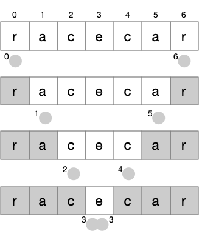
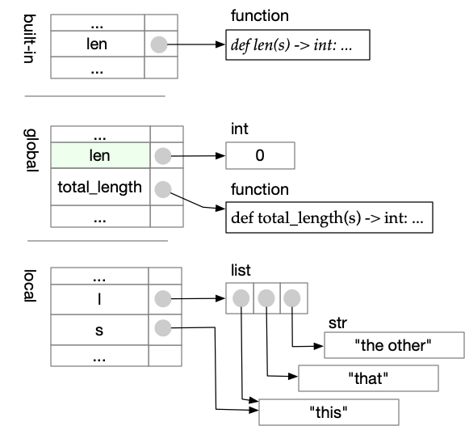
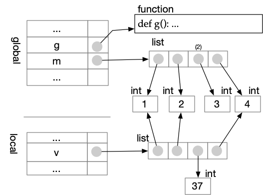
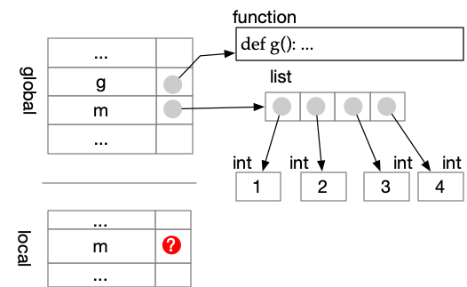
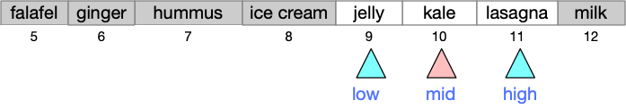

Introduction to Computer Science, part 1#
This open text in progress is designed for use in CS 210 at University of Oregon and in CS 161 at other Oregon colleges and universities.
Instructors and authors: You are welcome to use, borrow from, or fork this text for your own customizations, under a permissive open source license. Instructions are in the github repository.
A Course in Computational Thinking#
Introduction to Computer Science is a foundational course in computer science. It is a course in programming, but more than that, it is a course in computational thinking.
What’s so special about computational thinking and problem solving? Is it a branch of engineering, or math, or is it a science? Computing certainly draws from all of those fields, and also contributes to them, but in some ways it is unique.
Computing and computer science do not seek to characterize the natural world, although many computer programs (e.g., environmental models, computer aided design and numerical control) incorporate models of the natural world. Computing is increasingly a core tool used in the natural sciences, and computational thinking can be useful to scientists, but core concerns of the natural sciences and computing are distinct.
Some areas of computing (particularly usability and user interface design, and software engineering) draw heavily from the social sciences, especially psychology but also fields as diverse as anthropology, linguistics, and economics. Despite some overlap, though (e.g., economic game theory in the design of computer network protocols, visual attention in user interface design), the core concerns of computing are mostly distinct from the core concerns of the social sciences.
Like mathematics, computing requires rigorous reasoning about formal, abstract systems. Some areas of computer science produce mathematical proofs, as you will be required to do if you continue with computer science through courses in data structures and algorithms. However, computer scientists are more concerned than mathematicians with the things their formal systems represent.
Like engineers, computer scientists and software developers construct abstract representations of things to reason effectively about them. There is an important difference in the kinds of thing that computing produces, relative to conventional engineering. The design of a bridge or an automobile is complex and expensive, but the main expense of building a bridge is in the physical construction, and not the design. The cost of building cars at industrial scale is likewise much larger than the cost of designing a car.
The things designed (but not constructed) by
software developers are computations.
The computations are
constructed by computers, following our designs.
Computations are weightless and cheap.
The designs of those computations, which we call
programs or software or perhaps software systems, are complex
and expensive. Any part of the construction that can be fully
automated becomes cheap, but there always remains some part of the
design that is necessarily human, complex, and demanding.
Computing exposes the expense of design by removing the
limits of engineering physical things.
All these things that computing is not may shed some light on what computing and computer science are. Computer science is concerned with design of computations, and like other design disciplines it requires creative problem-solving. It requires forming and using abstract, often mathematical models, without losing track of their relation to concrete artifacts. It especially requires careful control of complexity, decomposing problems into smaller sub-problems and organizing them to maintain intellectual control. Many disciplines incorporate these concerns to some extent, but they are the very core of computing.
In tackling a core, rigorous course in computing, you should certainly become a better programmer. But if skill in programming is the only thing you gain from this course, then we have failed. If you as a learner and we as your teachers are successful, a rigorous course in computational thinking will make you a better and more creative problem solver.
Learning to Program#
The principles and techniques you will learn in Introduction to Computer Science are not limited to a single programming language, let alone a particular computer or operating system. But we have to start somewhere. That somewhere requires us to choose a programming language, and to practice using it.
Why Python#
In this course we will use Python, specifically Python version 3.10 or higher. Python is widely used in data science and scientific computing, in cartography, in web development, in machine learning, and in many other domains, but that is not why we have chosen it. We have chosen Python 3 because we believe it is a good language for learning to program. Python 3 is
Consistent. There are few “special cases” to remember in Python, which makes it easier to remember how things work and to build on what you know.
Concise. Python does not require a lot of boilerplate, which makes it easier to read example code.
Well-provisioned. Although there are many extras that you could add, a standard and straightforward installation of Python is enough to build many interesting projects.
That is not to say that Python is a perfect language. It is certainly not the only programming language you will ever want or need to learn. But among the programming langauges available to us today, we believe it is an excellent starting point.
Getting a Start#
The pre-requisites for Introduction to Computer Science include a basic familiarity with programming. That familiarity may take many forms (not necessarily programming in Python). Also, student knowledge from a course some time ago or from self study may be rusty or incomplete.
If you have not programmed at all, but want to tackle this very demanding course, we can recommend the Computer Science Circles online lessons as a good and thorough introduction. Even if you have programmed in Python before, you may find the CS Circles materials valuable as a refresher.
The remaining sections of this chapter provide brief instructions for installing Python 3 on the computer you will use for your projects, and then just enough introduction to Python programming to tackle an initial project.
Installing Python and IDLE#
This is a project-oriented course. It is important that you have Python version 3.10 or later installed on the computer you will most often use for your class projects. For most students that will be a laptop computer or desktop computer.
Install Python 3 on Your Computer#
Python 3 runs well on a wide variety of computers. You will need a laptop or desktop computer; tablets and phones will not be a good environment for learning to program in Python. The precise steps for installing Python 3, as well as the precise commands for starting Python programming tools, necessarily varies depending on whether you are using Linux, MacOS, or Windows. We will cover the basics first in a generic manner, then provide some detailed notes for the most common platforms.
Download and Install#
Start by visiting python.org with your web browser.

Select Downloads and choose the installer or archive for your
computer. Typically you will want the download labeled as “Latest
Python 3 Release” for MacOS or Windows. If you are a Linux user,
select “Source code”. Then follow directions for your particular
platform.
MacOS Install#
The MacOS installer will work like other MacOS application installers. You should not have to do anything extra.
Windows 10 Install#
Press the “Download Python 3.x” (currently 3.10.7) button.
If the download page offers
you “Latest Python 3 Release” or “Latest Python 2 Release”, Choose
the Python 3 release. This will download an installer.
Run the installer and follow its directions.
Linux Install#
You may find it easier to install using apt-get or a similar
package installer for the version of Linux that you use. You can
find example instructions in
The Hitchhikers Guide to Linux.
Alternatively, you can download a “tarball” archive of the sources from
Python.org. As a Linux user, you are probably familiar with these
steps, which are similar to installation of many other tools in Linux.
Execute Python statements and programs#
Executing Python commands#
Python commands (statements) may be executed immediately in a console, or stored in a program file (often called a script) for execution later. In this course we will use IDLE both to execute statements directly and to edit and execute program files. (Later we will explore additional ways to edit and execute Python programs.)
Once you have installed Python 3 on your computer, you should be able to start IDLE from the command line. It should look something like this:

The >>> symbol is a prompt indicating that
the Python shell, or console, is ready to
receive a statement and execute it.
Try this by typing print("Hello!") on the
line with the prompt.
print("Hello")
Hello
If you have trouble with these steps, we can probably help you in class help hours, or a classmate may be able to help.
If you have gotten this far successfully, it is time to dive into Python programming, or review Python programming if you have done it before.
Python Programming Kickstart#
Install Python before working through this section, which will review some basics of Python if you have programmed in Python before, or introduce them if you are not already familiar with Python.
We will revisit many of the concepts in this kickstart later, in more depth. For now we want to get just enough Python programming to initiate your first projects.
Executing Python commands in IDLE#
Python commands (statements) may be executed immediately in a console, or stored in a program file (often called a script) for execution later. In this course we will use IDLE both to execute statements directly and to edit and execute program files. (Later we will explore additional ways to edit and execute Python programs.)
Once you have installed Python 3 on your computer, you should be able to start IDLE from the command line. It should look something like this:
The >>> symbol is a prompt indicating that
the Python shell, or console, is ready to
receive a statement and execute it.
Try this by typing print("Hello!") on the
line with the prompt.
print("Hello")
Hello
What happens if you change “print” to “Print” or “PRINT”? Does this tell you something about the rules of the Python language?
Whenever you are curious about some rule or characteristic of the Python programming language, you should design and carry out micro-experiments to build understanding. As in a full-blown scientific experiment, you will get the most from a micro-experiment if you have a specific prediction based on a hypothesis about the language.
For example, your hypothesis might be “Python is
case-insensitive; ‘Print’ and ‘print’ should do the same thing.”
Your prediction would then be that Print("Hello") causes “Hello”
to be printed. Your experiment would disconfirm this prediction,
telling you that the hypothesis was incorrect: Python is case
sensitive. Performing little experiments as you work is much faster
than correcting a lot of code that was built on wrong assumptions!
Of course there are other ways you can learn details of Python language rules. You should already have bookmarked the Python library documentation in your browser. (If you haven’t, do it now!) Don’t attempt to read the whole library documentation from start to end. Instead, refer to it whenever you need to familiarize or re-familiarize yourself with some part of Python. You needn’t try to memorize anything beyond the absolute basics of Python syntax. Instead, look up what you need, as you need it. Memorization of the parts you use most will follow automatically.
Variables and Assignments#
A variable in Python is a named storage location. For example,
x could be a variable, and so could this_long_variable_name.
When we assign a value to a variable, we are storing a value in it.
If we write an assignment statement like x = 2 + 3, we are not
saying that x will always be equal to the value 2 + 3; rather
we are telling Python to evaluate 2 + 3 (producing the value 5)
and then store that value in the location called x. Some
programmers pronounce “=” as “gets” rather than “equals” to
emphasize that meaning and avoid confusion.
Sequences of assignment statements and other Python commands are executed one-by-one.
y = 5
x = y + 5
y = 25
x = x + 8
print(x)
18
Note in the little program above, storing the value 25 in y has
no effect on x, because we have already stored a value computed
from the prior value 5 that was in y when we executed
x = y + 5. If x = y + 5 was an algebra equation, we would have
created some permanent relationship between the values of x and
y. But it is not an equation. It just evaluates the then-current
value of the expression y + 5 and stores that value in x.
We can even use the current value of a variable to evaluate a new
value to be stored in the same variable, as we have in the assignment
statement x = x + 8.
If you find this even a little bit confusing, it may help to watch these assignment statements execute one by one in the excellent Python Tutor web application.
Basic types: int and str#
In our example, Python executed x = y + 5 by “evaluating” y + 5
before assigning the result to x. It is always the
right-hand side of the assignment (like y + 5) that is evaluated,
and only then is the result stored to the variable on the left-hand
side. We can’t write y + 5 = x, because y + 5 is not a variable.
(Try it to be sure … it won’t break your computer, but
the Python interpreter will print an error message.)
How does Python know how to “evaluate” the expression? How does it know what “+” means? The meaning of “+” actually depends on the kinds of value we are trying to add. Consider this:
pref = "The meaning of "
suff = "life, the universe, and everything"
phrase = pref + suff
print(phrase)
The meaning of life, the universe, and everything
While a value like 5 represents an integer, quoted text like
"The meaning of" is a string of characters. These are different
data types, that may be evaluated in different ways. In
Python, integers
are represented by the values of type int, and text is represented
by values of type str. Python has additional data types including
float (short for “floating point”) to represent real numbers and
bool (short for “Boolean”) to represent truth values, either
True or False.
Consider this little bit of code that looks almost like our previous example, but has a very different result:
y = "5"
x = y + "5"
y = 25
x = x + "8"
print(x)
558
Can you see the difference? When we put quotes around "5", we are
giving a value that is not an integer, but rather a string of
characters (in this case just one). While the meaning of “+” for
int values is integer addition, the meaning of “+” for str
values (strings of characters, representing text) is concatenation
(like gluing the strings together).
What happens if you try to mix them, like "x" + 5? (Don’t worry,
although nobody loves error messages, it won’t harm your computer to
try.)
Functions and Methods#
In addition to expressions with operations like “+” for addition,
operations are sometimes given as function calls like len("something")
for the length of a str value or max(5, 7) to choose the larger
of two int values. Some types also have methods, which are
similar but written a little differently, e.g.,
s = " island "
print(s)
print(len(s)) # calls function len on string s to find its length
t = s.strip() # s.strip() calls method strip to remove whitespace
print(t)
print(len(t))
island
39
island
6
It’s annoying that you have to remember when to use the
style of a function call like len(s) and when to use the style
of a method call like s.strip(). You’ll probably mix them up
sometimes (I still do, after years of Python programming), but
it’s an easy bug to fix when Python complains.
Lists#
Python also provides some types for collections of different values. We will explore and use several of them.
The collections we will use most are lists, which are sequences of
other values. For example, [1, 2, "buckle my shoe"] is a list of
three elements. The first two elements are int (integer) objects and
the third is a str (string) object. The elements of
a list may also be lists (we call this nesting, like matryoshka
dolls).
{kind=link}
Fig. 1 Lists within lists are “nested”, like nested dolls. (Image by user Fanghong in Mediawiki commons, used under CC by SA license.)#
We can nest lists as deeply as we like.
[["corvids", ["crow", "raven"]], ["primates", ["lemur", "human"]]]
denotes a list with two elements. The first element of that list is a
list with two elements, and the first element of that list is a
string (“corvids”).
{kind=link}
Fig. 2 List elements can be references to other lists, as well as other
kinds of object, as illustrated by this representation of
[["corvids", ["crow", "raven"]], ["primates", ["lemur", "human"]]]#
In addition to actual lists, we will use some other kinds of value that are very similar. For example, several of our projects will treat text files almost as if they were lists of strings, except that we have to “open” them before accessing each line of text as a string.
Decisions: The “if” statement#
Python provides an if
construct for choosing between possible actions. We’ll illustrate
it with a very simple example:
x = 17
y = 30
if x > y:
x_y_max = x
else:
x_y_max = y
print(x_y_max)
30
We can nest if statements within other if statements:
x = 17
y = 30
z = 15
if x > y:
if x > z:
biggest = x
else:
biggest = z
else:
if y > z:
biggest = y
else:
biggest = z
print(biggest)
30
Sometimes we can write simpler, clearer code by using elif instead of
nesting if statements. Combining comparisons with and and or
can also help.
x = 17
y = 30
z = 15
if x > y and x > z:
biggest = x
elif y > x and y > z:
biggest = y
else:
biggest = z
print(biggest)
30
Note
We have chosen an over-simplified example to illustrate if and
elif. An even better way to find the largest of three values
would be to use Python’s built-in max function.
Recall that the symbol = is used for assignment. So how can we make
an if statement that checks whether two values are equal? In
Python we use == to check equality. Some other comparisons
use pairs of characters: >= for “at least” or “greater or equal to”
and <= for “at most” or “less than or equal to”. For example:
if x == y:
print("They are the same")
elif x >= y:
print("x must be larger, since they're not equal")
else:
print("y must be larger")
y must be larger
Using = when you meant to use == for a comparison is a
common typo. Fortunately Python usually catches it and produces
an error message:
if x = y: # OOPS!
print("This will never happen. Huh uh.")
Input In [10]
if x = y: # OOPS!
^
SyntaxError: invalid syntax. Maybe you meant '==' or ':=' instead of '='?
Repetition (looping): for#
Often we need to repeat the same action with different values. Most
commonly we will want to perform an action with each element of a
collection (e.g., a list object). Python lets us do
this with a for loop, like this:
animals = ["elephant", "tapir", "manatee"]
for pet in animals:
print(pet)
elephant
tapir
manatee
Typically, when we loop through a collection of objects, we accumulate some information about the collection as a whole. Suppose, for example, we wanted to determine the number of characters (letters) in all the animal names together. We would initialize a total just before the loop, then accumulate values within the loop.
animals = ["elephant", "tapir", "manatee"]
total_length = 0
for pet in animals:
total_length = total_length + len(pet)
print(total_length)
20
This is such a common pattern that it has a name, the accumulator pattern.
We will see many variations on for loops and on the accumulator
pattern in projects. There are other kinds of loops in Python (e.g.,
a while loop repeats as long as some condition is true), but for
loops are most common.
User-defined functions#
Above we looked at calling built-in functions like len and
print. You are not limited to using the built-in functions
provided with Python — you can also write your own. We will
spend a lot of time designing, writing, testing, and debugging
functions in this course, starting with our very first project.
You may define a new function once and call it several times in different parts of your code. In that way a function can make your code shorter. More fundamentally, a well-designed and well-written function can make your code easier to read, understand, and maintain, by organizing complex logic into brain-size chunks.
You create a new function with the keyword def, short for “define”.
Give it a concise, meaningful name, and then describe the
arguments that the function will use (the input of the function)
and the type of result, if any, that it will return. For example,
if Python did not already have a max function for integers, we might
create one like this:
def my_max(x: int, y: int) -> int:
"""Returns x or y, whichever is larger"""
if x >= y:
return x
else:
return y
Note that we indicate the expected type of each of
the arguments x and y (both int in this case),
as well as the type of
value that my_max will return (also int). The first line
or lines in the indented body of the function is a
docstring comment explaining the purpose of the function
(but not how it works). In our first project we will also
see how to add automated tests to a longer docstring comment.
x and y in “def my_max(x: int, y: int)” are called formal
arguments.
You can think of the variables x and y
as placeholders for values that we will “pass in”
when we call my_max, like this:
a = 17
b = 32
ab_max = my_max(a, b)
print(ab_max)
In this example, a and b are called the actual arguments,
corresponding to the formal arguments x and y. The
When my_max is called with my_max(a, b), we pass the
values of a and b, setting the x value in my_max to
the value of a and setting the y value in my_max to
the value of b.
There is much more to be said about functions, about passing actual values and binding them to formal arguments, and especially about designing functions that help us think clearly about our programs. We will build on these basics in the next few projects and beyond.
Start building!#
The little bits above are only a small fraction of the Python programming language. We could go on much longer, but it is easier to remember information that you have actually used. We will therefore jump straight into building a project. After establishing that concrete anchor to your knowledge of programming in Python, we can return to fill in additional details and take a deeper look at variables, types, control structures (sequencing, decisions, and loops), and the problem-solving processes we use in programming.
Keep reading 𝄇#
If some of this chapter is a little confusing, read it again. If it doesn’t seem confusing yet, start on the project, then come back when the project confuses you to re-read relevant parts, and/or give it one more read-through when you finish the project. Really. These chapters are short so that you can read them again and again, and especially so that you can move back and forth between project and text. Don’t expect to remember everything in a chapter and then recall it as you build the project. Rather, a first reading will get you far enough to get started on the project, then the project will help you get more from a second reading of each chapter.
Project 1#
Our first project is an anagram solver. You will find it on github.

Fig. 3 Download the project as a zip archive from github.#
Decompress the project archive into a directory (“folder”) and move
the whole thing to a directory in which you keep all the projects
for this class. Inside the directory for this project, you will
find a directory called “docs”, and inside that you will find
“HOWTO.md” with instructions on completing the assignment. Those
instructions are in a form called “markdown”. If you are familiar
with the markdown format and already have a markdown reader tool
installed, you can read the instructions that way. Otherwise you
may prefer to read on github by clicking
through on docs and then HOWTO.md to reach
the formatted version.
Designing and Building Functions in Python#
As we discussed in the prior chapter, controlling complexity is the main challenge in programming, and functions are one of the primary ways we can decompose complex programs into brain-size chunks.
In this chapter we will take a deeper dive into functions in Python: How they work, how to write and test them, and how to design them. The last part, learning to design good functions that are useful, readable, testable, and maintainable, is most challenging. We will not master it in a week or in ten weeks, not even in ten years. Like learning to play a musical instrument or cooking or playing a sport, one can spend a lifetime improving, expanding, and refining technique. Our shorter term objective is to establish a basic level of competence to begin.
We begin with a brief look at the mechanics of functions. This includes the syntax for writing a function header, and a few basic rules that they should conform to. Most importantly, you must understand how formal arguments and other variables that are local to a function relate to variables outside the function. This is called scope.
With those mechanics in hand, we can make our first (and certainly not our last) foray into function design. We will look at some basic guidelines that (almost) all functions should follow. We will also look at testing functions, and writing documentation that is useful for users and maintainers of functions. We might refer to these as guidelines for function hygiene.
Basic hygiene helps us avoid some harmful practices. We would like to go farther and learn to design really well-chosen, useful, even elegant functions. How do we choose functions? Of all the ways we could decompose a complex problem into smaller, simpler sub-problems, what makes some better than others? Our first steps toward grasping these deeper issues are best taken in the context of a project.
The project illustrates Monte Carlo simulation, an important computational technique that is applied in fields from games to biology, ecology, and economics. The project documentation also walks you through the thought process of decomposing a project into smaller parts and choosing an order in which to build and test those parts. Decomposing problems and composing solutions is a core computational thinking skill that you will use and refine as long as you are solving problems with computational techniques. It can also be useful to you in other problem-solving domains.
Binding: Functions and Scope#
In the prior chapter and accompanying project we both used functions
that come built-in to Python (like max and sorted) and functions
that you can create yourself. In this chapter we will look further
at both, but especially at functions that you write.
{kind=link}
Fig. 4 Tools alone will not make you a good cook, or a good programmer, but good cooks and programmers know their tools.#
Built-in and imported functions#
A collection of reusable software written by others and ready for us to incorporate in our own programs is called a library. Python has a rich set of libraries. In this course we will focus on libraries that come pre-packaged with a standard Python 3 installation. We will omit consideration of additional libraries that you can install, although you might use those in other courses or for side projects.
Always available#
Some functions are always present and available.
They are documented at
https://docs.python.org/3/library/functions.html.
The always available functions
include some we have already seen, like len and sorted.
They also include some more esoteric functions that you may never
use. You do not need to memorize them all!
Recall that methods are very much like functions, but instead of a
function call like len(s), we make a method call like s.strip().
The methods of the built-in types are not listed in the table above,
but they are documented with the types of data they operate on.
For example, strip is described in
documentation for type str.
Again, it is not necessary (or perhaps even possible) to memorize
all the built-in methods for all the built-in types. Bookmark the
Python standard library documentation page and refer to it
whenever you need to use them. You will soon enough remember the
functions and methods you use most often.
Importing other modules#
In addition to the functions that are always available and the types that are always available with their methods, the Python standard library includes a large number of optional modules. These are installed on your computer when you install Python 3, but they are not automatically available in your program until you indicate your intent to use them.
To gain access to functions and types from a part of the standard library that is not already available, you import it, like this:
import random
random is a module that contains several functions we might want
to use. For example, to generate a random integer between
25 and 100, inclusive, we could write
r_int = random.randint(25, 100)
print(r_int)
78
Notice that we cannot call randint without specifying that it
belongs to module random. That is because the module is a
namespace with a distinct set of names for functions and variables.
It is possible for the same name to appear in more than one
namespace, referring to distinct values or objects.
That’s the point of namespaces: Because each
module or other
namespace has its own set of names, we don’t have to worry about
accidental conflicts between names in different namespaces.
The global namespace (or scope) of your program is distinct from
the namespace of modules you import. When you import random, the
name “random” refers to the whole module, and is distinct from any
names
that occur within that module, like random.randint. It is even
possible for the module random to contain within it a function
that is also called random. It does:
r_float = random.random() # Returns v such that 0.0 <= v < 1.0
print(r_float)
0.35236960247475857
There is no confusion in interpreting the name random.random. The
part before the . is in the namespace of your program, so it
refers to the module. The part after the . is in the namespace of
the module, so it refers to function random found in module
random.
Note
This section introduces many closely related terms like scope, namespace, and frame, as well as some terms like argument that are often used interchangeably with other terms like parameter in Python documentation. It can be confusing! We have provided a short discussion of terminology to help you keep them straight.
Finding useful modules#
It is not practical to memorize the names of all the modules in the Python standard library, let alone all the functions in all those modules. Just bookmark the standard library documentation and search. The modules are mostly well-named and have clear, concise descriptions that will help you find what you need. Once again, the modules you use often will stick in memory without conscious attempts at memorization.
Defining and calling a function#
Recall that a Python function can be created by writing a function
header (starting with def) to define how it is called, and a
function body that describes how it works. Here is a simple
function that returns the absolute difference between two integer
values:
def abs_diff(x: int, y: int) -> int:
"""Absolute value of the difference between x and y."""
if x > y:
return x - y
else:
return y - x
The name of the new function will be abs_diff. Following
Python naming conventions, it
is made of lower case letters (no capital letters), with parts
separated by underscore (”_”). The following
chapter on pragmatics
discusses the choice of name in more depth.
Function abs_diff has two arguments, also called formal
parameters, x and y. The actual arguments passed to
abs_diff must be int objects representing integers. The
function header also indicates that abs_diff will return a single
int value. This information comprises the signature of
function abs_diff, which is (int, int) -> int. This is enough
to tell us that x = abs_diff(5, 7) is a legal assignment that
assigns an int value to x, but abs_diff("cats", "dogs") is
an error, as is abs_diff(3, 2) + "turtles".
Less obviously, abs_diff(3.2, 5.4) is a programming error, even
though it will return 2.2. This is because the header of a function
is a sort of contract between the author of the function and anyone
who calls that function (even if they are the same person). Passing
a floating point number like 3.2 to abs_diff breaks that contract.
As the next chapter discusses in more depth,
it is essential that a programmer who wants to make use of
abs_diff be able to depend entirely on the contract given by
the function header and docstring, without referring to the body of
the function.
Scope#
We saw earlier that when we call a function, the values we “pass” to the function are assigned to the formal arguments, which might have different names than the variables that we pass:
def diff(a: int, b: int) -> int:
"""Returns a - b."""
return a - b
x = 17
y = 14
z = diff(x, y)
print(z)
print(a) # Error! Variable a doesn't exist here.
3
---------------------------------------------------------------------------
NameError Traceback (most recent call last)
Input In [4], in <cell line: 9>()
7 z = diff(x, y)
8 print(z)
----> 9 print(a)
NameError: name 'a' is not defined
It may help to see this example step-by-step in PythonTutor. If you are viewing this chapter in a web browser, use the “next” button in the frame below to step through it.
In the example above, function diff, the value of x is assigned
to the formal argument a and the value of y is assigned to the
formal argument b, so we get 17 - 14 which is 3. Also, the
variables a and b exist only while diff is executing, so the
final statement will cause an error (“NameError”, which
basically means there is no variable a at that point in the program.)
If you assign to a variable within a function, that variable will likewise exist only as long as the function is executing.
def example(a: int) -> int:
"""Example return a + 1."""
thing = a
return thing + 1
x = example(41)
print(x)
print(thing) # No thing here!
42
---------------------------------------------------------------------------
NameError Traceback (most recent call last)
Input In [5], in <cell line: 8>()
6 x = example(41)
7 print(x)
----> 8 print(thing)
NameError: name 'thing' is not defined
You can also step through this example in PythonTutor.
We say that both a and thing exist in the local scope of
function example. It is even possible for two or more variables
with the same name to exist in different scopes.
# Global scope (global frame or namespace)
x = 23
y = 42
m = 19
def example(m: int):
"""Example to illustrate scope"""
y = 77
print(f"x is bound to {x} within example")
print(f"y is bound to {y} within example")
print(f"m is bound to {m} within example")
# Executing "example" creates the new local scope
example(x)
# When "example" finishes, the new scope is deleted
print(f"After example, x is bound to {x}")
print(f"After example, y is bound to {y}")
print(f"After example, m is bound to {m}")
x is bound to 23 within example
y is bound to 77 within example
m is bound to 23 within example
After example, x is bound to 23
After example, y is bound to 42
After example, m is bound to 19
You can step through this example in PythonTutor
During execution of example(x), the scopes created by the example
above look like this:

There are several things to notice:
Although there are two name spaces (scopes or frames) in the example, there is only one object space. PythonTutor shows the
intvalues directly in frames as a simplification, but they are actually objects in object space.When we call
example(x), the value bound toxin the global scope is bound tomin the scope ofexample(x). We say that the “actual argument”xis bound to the “formal argument”minexample(m: int). This is always how values are passed to functions in Python.The same value, an
intobject containing the integer 23, is bound to more than one name. This is called aliasing.
It will become important when we consider objects like lists that can be modified, with intentional effects or unintentional side effects.
Aliasing of the same int object to the name m in the
execution of example, and to x in the global namespace, is
hardly noticeable. We might compute some new value by adding the
values of 23 and 42, but that would be an entirely new int object.
We would not be changing the int object 23 mean something else
(thank goodness). We call int objects immutable because they
can never change value.
You can watch the example in action with
Python Tutor.
It should look very similar to our illustration above, except Python
Tutor will not draw the int objects in the object space. They
really are objects, but Python Tutor draws the integer values
without the objects that hold them to reduce clutter.
Global variables#
Generally we want to keep the local variables in one function execution completely separate not only from the local variables of other functions, but also from the global namespace of our program. We do not want to write code like this:
def bad_bad_bad(x: int):
"""Don't do this!"""
s.append(x) # s is not local to bad_bad_bad.
s = [1, 2]
bad_bad_bad(3) # Not obvious that we are changing s!
print(s)
[1, 2, 3]
In this example, bad_bad_bad is a function that accesses and
even changes the variable called s, not in its own namespace (the
local scope of the function) but in the global scope of the program.
The function is at least appropriately named. This is almost always
a bad idea. Python nonetheless permits it because there are a few,
rare cases in which accessing a global variable is needed.
If you are reading the online version of this text, you can
step through bad_bad_bad in PythonTutor.
One case in which we might need to access a global variable from
within a function is when the global variable is some kind of fixed
constant or configuration. For example, an anagram finder might
depend on a file that holds a list of dictionary words. We do not
want to bury the name of that file inside some function. We might
instead define it near the beginning of the program as a global
constant, like the variable DICT in the Jumbler project:
DICT = "shortdict.txt" # Short version for testing & debugging
# DICT = "dict.txt" # Full dictionary word list
# ... other code ...
def find(anagram: str):
"""Print words in DICT that match anagram.
... test cases here ...
"""
dict_file = open(DICT, "r")
# Reference to DICT is better than burying
# the configuration setting here in the function.
for line in dict_file:
word = line.strip()
if word == anagram:
print(word)
Note the Python convention of using all upper case letters to make it
clear to readers of this code that DICT is a global variable.
Very rarely we might need to update a global variable from within a function. This is quite unusual, and never something to be done without first considering alternatives. One of those rare cases is when for some reason we need to keep a count of how many times a function has been called. We cannot keep the count in a variable that is local to the function, because then the local variable would disappear after each call. A new variable would be created each time the function is called. This code will not even work:
count_foo = 0
def foo() -> int:
"""This will not work!"""
count_foo = count_foo + 1
return count_foo
print(foo())
print(foo())
print(foo())
---------------------------------------------------------------------------
UnboundLocalError Traceback (most recent call last)
Input In [8], in <cell line: 8>()
5 count_foo = count_foo + 1
6 return count_foo
----> 8 print(foo())
9 print(foo())
10 print(foo())
Input In [8], in foo()
3 def foo() -> int:
4 """This will not work!"""
----> 5 count_foo = count_foo + 1
6 return count_foo
UnboundLocalError: local variable 'count_foo' referenced before assignment
What happened here? While we may have intended to access the global
variable count_foo from within foo, we did not. Because there is
an assignment to count_foo, Python has created a local variable
count_foo. It has the same name, but it is not the same variable,
because it is in the namespace (scope) of the execution of function
foo. When Python attempts to evaluate count_foo + 1, it
references the local variable count_foo and finds that it does not
yet have a value. Hence the “UnboundLocalError”.
If we really, really wanted to reference and change a global
variable, Python will allow us to explicitly declare that it is
the global variable count_foo we want to refer to, and not a new
local variable with the same name.
count_foo = 0
def foo() -> int:
"""This will work. That doesn't make it a good idea."""
global count_foo
count_foo = count_foo + 1
return count_foo
print(foo())
print(foo())
print(foo())
1
2
3
If you are reading online, you can trace it in PythonTutor.
Hygiene and pragmatics#
Even in this section devoted to the basic mechanics of defining and
calling functions, it has been difficult to completely avoid talking
about good and bad approaches. The
next section
takes up hygiene of function design in more depth.
Instructions for our project
discusses pragmatics of choosing parts of the code to decompose into
functions.
Terminology#
The many terms like scope and frame can be confusing, especially since you will encounter different names for the same or closely related concepts in documentation. We have provided a brief terminology review to help you sort them out.
Function Hygiene in Python#
Function headers and docstrings#
Consider again the abs_diff function defined in the prior chapter.
def abs_diff(x: int, y: int) -> int:
"""Absolute value of the difference between x and y."""
if x > y:
return x - y
else:
return y - x
The name of the new function will be abs_diff. Following
Python naming conventions, it
is made of lower case letters (no capital letters), with parts
separated by underscore (”_”).
The triple-quoted string immediately following the function header
is the docstring comment.
Names matter#
We have chosen
abs_diff rather than absolute_difference to keep it short.
We have not shortened it further to a_d, nor chosen an arbitrary
name like theta, because it is important for the name to be
mnemonic and suggestive of its purpose.
How long is long enough? How descriptive must a name be?
Kernighan and Plauger provide nuanced and pragmatic guidance to
naming in their classic book
The Elements of Program Style.
Although the original version of that book uses examples from older
programming languages that you may never encounter, the essential
principles remain valid. One of these is that distinctiveness
(avoiding names that can be confused with each other) is paramount.
For example, hours_weekday_worked and hours_weekend_worked are a
bad pair, because they are distinguished only by middle words
that look similar. weekend_hours and
weekday_hours, or even wkend_hours and wkday_hours, are
easier to distinguish because their differences are more
prominent.
A second principle, which like distinctiveness is rooted in properties of human memory, is that a name which is defined in one place and then referenced far away needs to be more descriptive than a name that is defined and then used just once nearby (e.g., within the span of code that is likely to be visible on the same screen of text).
Arguments#
Function abs_diff has two arguments, also called formal
parameters, x and y, and returns a single
int value. This information comprises the signature of
function abs_diff, which is (int, int) -> int. This is enough
to tell us that x = abs_diff(5, 7) is a legal assignment that
assigns an int value to x, but abs_diff("cats", "dogs") is
an error, as is abs_diff(3, 2) + "turtles".
Less obviously, abs_diff(3.2, 5.4) is a programming error, even
though it will return 2.2. This is because the header of a function
together with its docstring
is a contract between the author of the function and anyone
who calls that function (even if they are the same person). Passing
a floating point number like 3.2 to abs_diff breaks that contract.
Why do we care about this “contract”, if the code works? Because the contract determines what the author of the function is permitted to change without notice. Calling a function in a way that violates the contract might work today, but fail sometime later when the author of the function makes a perfectly acceptable change to the body of the function. The user of a function must only rely on the contract as given in the function header and docstring. This applies even if the author and the user are the same programmer! It is all too easy to make a small and seemingly harmless change to one part of a program and accidentally break a completely different part because of some forgotten dependency.
Information hiding#
We treat the body of the function as if it were invisible to the programmer who writes calls to that function, and subject to change without notice, even if it is the same programmer. This is called information hiding. Students and beginning programmers often find information hiding unintuitive and bothersome. Understandably so, because as a beginner they write most code individually, and seldom work on the same project for more than a few weeks. This is apt to change as you tackle larger and more complex projects.
The software systems that matter to people are typically collaborative or change hands over time, and they last much longer than you might imagine. Even the original developer of a function will find themselves essentially an outsider when they return to it after a few months working on other parts of an application.
There is another reason for clear, simple contracts and information hiding. Programs are written by humans. Human brains are amazing, but one thing they do not do well is maintain a large number of details in working memory.
We solve complex problems by decomposing them into smaller problems, then composing simple solutions of sub-problems to solve the overall problem. This is only possible if we can ignore and abstract away details of some of the sub-problems while working on other parts. If we need to understand how a function works to understand what it does, we can’t suppress that detail in any part of the program that uses the function. Information hiding is an essential tool for controlling complexity by giving us permission to ignore most details most of the time, focusing in on just a few at a time.
Docstrings#
As useful as the signature of a function is in telling us what
kind of values we can pass to it and what kind of value we can
expect back from it, the signature alone cannot tell us everything
we need to know. The name can help, but it’s not enough: We can
guess that abs_diff probably does not give us the sum or the
product of its arguments, but the docstring comment immediately
following the function header gives us a more complete description.
The Python interpreter makes the docstring comment available through its built-in help system:
help(abs_diff)
Help on function abs_diff in module __main__:
abs_diff(x: int, y: int) -> int
Absolute value of the difference between x and y.
As with choosing names, writing docstring comments that are clear but concise is an art that requires care and practice.
Argument names#
What about those formal argument names, x and y? Should they be
longer? Would it help? If there were particular meanings
associated with them (e.g., if the first argument should be a height
in centimeters and second should be an angle in degrees), then x
and y would be poor names. Consider the following function,
in which longer names are needed:
def relative_error(est: float, expected: float) -> float:
"""Relative error of estimate (est) as non-negative fraction
of expected value.
""""
Here the formal parameters are est (for estimate) and expected
(for expected value, i.e., for the value that est should be close
to). These have been chosen to be mnemonic. You can probably
guess that est means “estimate” even without context. Without
context it is less likely that you would guess that expected means
“the value we expected to get”, but in the context of a function
called relative_error it is clear.
These formal parameters are not interchangeable;
relative_error(3.5, 3.8) will
not give the same result as relative_error(3.8, 3.5). If we give
them meaningless names like x and y, we are likely to reverse
them and get the wrong answers. Ambiguous names would be dangerous
in that case! In the case of abs_diff, on the other hand, x
and y are just numbers, nothing more, which is what their generic
names communicate.
Names that are distinguished only by suffixes, like v1, v2, v3,
etc., are never acceptable, because they are too easy to confuse.
Arbitrary names like your favorite colors or your pets are also not
acceptable, even for generic values for which x and y would be
acceptable, because they falsely appear to have some meaning.
Results, effects, and side effects#
A function should normally either return a well-documented result or have some well-documented effect on the arguments it is passed, but not both. For example, here is a function that returns a list containing just the positive elements from a list of integers:
def select_pos(m: list[int]) -> list[int]:
"""Returns a list of the positive elements from m."""
result = []
for el in m:
if el > 0:
result.append(el)
return result
li = [1, 0, 2, 0, 3, 0]
li_selection = select_pos(li)
print(f"li after selection is {li}")
print(f"selection is {li_selection}")
li after selection is [1, 0, 2, 0, 3, 0]
selection is [1, 2, 3]
select_pos is ok … it returns a well-documented result and it
does not have effects on anything outside its local scope.
We could also write a function that appends the positive elements of
one list to another:
def append_pos(src: list[int], dest: list[int]):
"""Positive elements of src are appended to dest."""
for el in src:
if el > 0:
dest.append(el)
li = [1, 0, 2, 0, 3, 0]
li_selection = []
append_pos(li, li_selection)
print(f"li after selection is {li}")
print(f"li_selection is {li_selection}")
li after selection is [1, 0, 2, 0, 3, 0]
li_selection is [1, 2, 3]
append_pos is also ok … it has a well-documented effect, and it
does not return a result. (Technically it returns a special value
called None.)
We generally avoid creating functions or methods that both
return a result and have a result. It is easier to understand just
one or the other. For example, the built-in
function sorted returns a sorted list without changing the list it
is given, while the list method sort puts the list into sorted
order but does not return a result.
In the rare cases that doing both makes a program
significantly shorter, clearer, or faster, we must document that
combination particularly well. A rare example of a built-in method
that has both an effect and a result is the list method pop,
which both removes an item from the list and returns it.
Side effects#
When a function or method affects something other than its arguments or the object on which a method is called, it is called a side effect. Side effects make it easy to create program bugs and hard to find and correct them. One case where side effects may be justifiable is in output, e.g., printing something, logging something to a file, or presenting a graphic. The more obvious and well-documented such a side effect is, the less chance it will lead to a frustrating debugging session as unexpected effects seem to come from nowhere.
Summary of function hygiene guidelines#
Make the function header and docstring a contract between the author and user of the function. The user should not depend on details of the body of the function, or even have to read the body of the function to know how to use it correctly.
Use names that are sufficiently clear and distinct. They don’t have to be long, but they must be understandable in the context in which they will be used.
Generic names like
xare ok only for generic purposes like “some number”, never for something specific like “the number of sides of the polygon.” The names of your pets or siblings are only acceptable if the program computing something about your pets or siblings.A function (or method) should either return a result or have an effect. Very seldom should a function or method have both an effect and a result, and those rare cases must be carefully documented.
Side effects are particularly dangerous. Avoid them when practical, and particularly avoid side effects that could go unnoticed, unless you love long and confusing debugging sessions.
You may be tempted to ignore these guidelines because you will be the only user of the functions you write. The you of next week will be angry at the you of this week if you do.
Review of terms#
Terminology of functions and scopes can be confusing, because there are many different terms commonly used for the same or almost the same concept … even in the Python documentation.
Scope, namespace, frame, symbol table#
A namespace may also be called a symbol table or a frame.
These terms are not quite identical (a frame is really a
structure inside the Python interpreter used to implement a
namespace), but they are so closely related that you can treat
them as synonyms.
The term scope is also almost interchangeable with namespace, except “local scope” means “the namespace of the currently executing function.” There is always exactly one “local” scope and one “global” scope, while there may be many namespaces that are temporarily inaccessible.
Every frame implements a namespace, which may be the local scope or global scope. Outside of any function, the local scope and the global scope may be the same namespace.
The technical distinctions may matter
to you someday if you build your own programming language interpreter.
For now you can treat namespace, scope, and frame
as synonyms.
Local and global variables#
A local variable is a variable in the namespace (scope) of a function, accessible only when that function is executing. A global variable is a variable defined in the global namespace, which may also be accessible from within functions.
Formal and actual arguments (parameters)#
The terms parameter (formal parameter or actual parameter) and argument (formal argument or actual argument) are synonymous. The author of this chapter looked to the Python documentation to see which term was standard in Python. The disappointing answer was “both”.
It could be
confusing to pair “formal parameter” with “actual argument”, so we will
try to be consistent in preferring “argument” in both contexts.
Occasionally we will use both terms, since you will often encounter
“formal parameter” in other documentation.
Sometimes we will mess up … let us know so we can fix
inconsistencies in this text.
When we use the term argument in the context of defining a function, we mean formal argument, that is, the name that will be used within the function body. When we use the term argument in the context of calling a function, we mean actual argument, that is, the value transmitted to the function.
def f(a): # a is a formal argument
"""Does nothing"""
pass
f(x) # x is an actual argument
Collections and Loops#
We have already introduced lists and basic loops, including loops that read each line in a file. In this chapter we will revisit those basics and dig a little deeper. We will look at collections including lists, tuples, and dictionaries. We will introduce some additional operations, and especially we will examine ways of looping through collections.
Collection basics#
A collection type (or collection class) is a kind of data that
can contain other data as elements. For example, ["alpha", "beta", "gamma"] is a list of strings (str), while [1, 2, 3] is a list of
integers (int).
In general a collection type will have:
A syntax for literals, i.e., a way to write down a value and indicate that we intend a collection of a certain kind. For example, if we write
[1, 2, 3], Python will interpret it as a list of integers, while if we write(1, 2, 3)Python will interpret it as a tuple of integers.Operations for building or extending values. For example, if we have a list
m = [1, 2, 3], thenm.append(17)will make the new value ofmbe[1, 2, 3, 17].Operations for accessing individual elements. For example, we can index a list. If
mis[1, 2, 3, 17], thenm[0]is 1 andm[2]is 3.A way of iterating (looping) through the elements of the collection.
For a complete list and detailed description of these features for all the standard collection types in Python, refer to the Python library documentation. In this chapter we will cover just some basics.
Lists#
A list (type list) holds a sequence of elements. The elements can
be any other kind of value, including integers and strings but also
other collections including lists.
To write a literal list value, we use square brackets, e.g.,
["a", "b", "c"].
We can add an element to the end of a list with the append method.
Here’s another way to create the value ["a", "b", "c"]:
m = []
m.append("a")
m.append("b")
m.append("c")
m
['a', 'b', 'c']
The elements of a list have indexes, or positions, starting with zero.
m = ["a", "b", "c"]
print(m[0])
print(m[2])
a
c
Suppose instead we have m = [["a", "b"], ["c", "d"]]. Now m is
a list of lists of strings. Now m[1] is ["c", "d"]. If we
wanted to access the first element of the second sublist, we can
write m[1][0] to first index m to get ["c", "d"] and then
index ["c", "d"] to get "c".
m = [["a", "b"], ["c", "d"]]
print(m[1][0])
c
We can determine how many elements are in m with len(m). Note
that even if a list contains other lists, len counts each element
just once (not elements of the sublists).
m = ["a", "b", "c", "d", "e"]
print(len(m))
r = [["a", "b", "c"], ["d", "e", "f"]]
print(len(r))
5
2
There are two main ways to iterate (loop) through the values of a
list. The simplest is the way we will use most often: We can ask a
for loop to iterate through the elements of the list, like this:
m = ["one", "two", "three"]
for s in m:
print(s)
# or do anything else with s in the body of the loop
one
two
three
Later we will use other approaches, usually because we need to know the position (index) of each element in addition to its value. In that case we might write something like
for s_i in range(len(m)):
s = m[s_i]
print(s_i, s)
0 one
1 two
2 three
In the code snippet above, we have used an arbitrary variable name
s for elements of m. In an application, we would try to use a
more meaningful name. We are also free to choose the name of the
index variable. Python does not require that they be related at all.
I have chosen s_i to suggest that it is the index for s. You
are not required to use such a convention, but in general it is a
good idea to help a reader of your code see the meanings and
relationships among your variables.
What if we have nested lists, i.e., lists within lists? They
often call for nested loops, loops within loops. Suppose for
example we have m = [["a", "b"], ["c", "d"]]. We often think of
such nested lists as a grid or matrix in which each sublist is a row:
“a” |
“b” |
“c” |
“d” |
If we wanted to
print all the strings in the sub-lists of m, we might write
something like
m = [["a", "b"], ["c", "d"]]
for row in m:
for s in row:
print(s)
a
b
c
d
This order of access is called row-major order.
We might wonder whether we
can iterate through m in column-major order, i.e., down the
first column and then down the second column. We can, but
it’s a little more complex:
for col_index in range(len(m[0])):
for row_index in range(len(m)):
print(row_index, col_index, m[row_index][col_index])
0 0 a
1 0 c
0 1 b
1 1 d
Of course, this approach to looping in column major order works only if the matrix is rectangular, i.e., if every row (sub-list) has the same length. It will also not work for a matrix with zero rows.
Tuples#
The term “tuple” comes from generalizing doubles (pairs), triples, quadruples, quintuples, etc., i.e., sequences of some fixed size. Tuples are very similar to lists, but they are immutable. We can create new tuples based on the contents of other tuples, but we cannot change the value or length of a tuple.
To write a literal tuple value, we separate them by commas, usually in parentheses:
("a", "b", "c").
We cannot add elements to the end of a tuple, or anywhere else.
They are immutable.
While the elements of a tuple have indexes like the elements of a list, and can be accessed in the same manner, we more typically access tuple elements by destructuring:
character = ("Wesley", "Dread pirate Roberts", "As you wish")
name, alias, phrase = character
print(name)
print(alias)
print(phrase)
Wesley
Dread pirate Roberts
As you wish
In principle we could loop through tuples in all the ways we loop through lists. In practice that is rare. Because tuples can never change after they have been created, destructuring is usually more appropriate, even for nested tuples:
pdx = ("Portland International", (45.589,-122.596))
name, (lat, lon) = pdx
print(name)
print(lat)
print(lon)
Portland International
45.589
-122.596
Dictionaries#
While lists and tuples represent sequences, dictionaries (type dict)
represent associations between a set of keys and a set of
values. We can think of them as “lookup tables”. For example,
we might have a dict that associates postal abbreviations with the
names of U.S. states:
WA |
Washington |
OR |
Oregon |
CA |
California |
AK |
Alaska |
We can write a dict literal using curly braces and associating
each key to a value with :. We can then “look up” an association
by treating the key as an index.
state_abbrevs = {
"WA": "Washington",
"OR": "Oregon",
"CA": "California",
"AK": "Arkansas"
}
or_state = state_abbrevs["OR"]
print(or_state)
Oregon
We can add a new (key, value) pair to a dict using the key as an
index.
state_abbrevs["NV"] = "Nevada"
The keys in a dict are unique. If we associate a new value with
key, the old (key, value) association is replaced.
state_abbrevs["AK"] = "Alaska"
print(state_abbrevs)
print(state_abbrevs["AK"])
{'WA': 'Washington', 'OR': 'Oregon', 'CA': 'California', 'AK': 'Alaska', 'NV': 'Nevada'}
Alaska
The values in a dict can be any data type, but the keys must be
hashable, which in practice means that you should use immutable
values as dictionary keys. While we most often use strings as
dictionary keys, integers and tuples are also acceptable. Lists
cannot be dictionary keys.
good_dict = { (1, "Alpha"): "A", (2, "Beta"): "B" }
print(good_dict[(2, "Beta")])
B
bad_dict = { [1, "Alpha"]: "A", [2, "Beta"]: "B" }
print(bad_dict[[2, "Beta"]])
---------------------------------------------------------------------------
TypeError Traceback (most recent call last)
Input In [15], in <cell line: 1>()
----> 1 bad_dict = { [1, "Alpha"]: "A", [2, "Beta"]: "B" }
2 print(bad_dict[[2, "Beta"]])
TypeError: unhashable type: 'list'
The in operation tests whether a dict contains a key:
if "TX" in state_abbrevs:
print(state_abbrevs["TX"])
else:
print("TX expansion not found")
TX expansion not found
We cannot directly iterate a dict, but we can obtain a list of key
values with the keys method or a list of (key, value) pairs
(tuples) with the items method of type dict.
for abbrev in state_abbrevs.keys():
print(abbrev)
WA
OR
CA
AK
NV
Since the elements in the list returned by the items method are
tuples, it is common to destructure them into separate variables
for each key and value:
for kv_pair in state_abbrevs.items():
abbrev, name = kv_pair
print(abbrev, name)
WA Washington
OR Oregon
CA California
AK Alaska
NV Nevada
The destructuring can be done right in the for statement, like this:
for abbrev, name in state_abbrevs.items():
print(abbrev, name)
WA Washington
OR Oregon
CA California
AK Alaska
NV Nevada
Loops#
Counting#
A very common programming task is to count elements in a collection.
If we just need to know the size of the collection, in Python we can
use the len method, e.g.,
print(len(state_abbrevs))
5
Often we want to count only elements that satisfy some condition. For example, suppose for some reason we wanted to determine how many elements of a list of strings are state abbreviations:
abbrevs = ["CO", "OR", "WA", "MD"]
states_count = 0
for ab in abbrevs:
if ab in state_abbrevs:
states_count = states_count + 1
print(states_count)
2
Note the pattern: We initialize the count before the loop, add to it within the loop, and do something with the result after the whole loop is complete.
Counting multiple values#
The counting pattern we have considered so far keeps a count of one
thing in a variable. What if we wanted to keep a count of several
different values? For example, what if we wanted to know that
['dog', 'dog', 'cat', 'dog', 'cat'] is three dogs and two cats?
We might not even know that the list will contain only dogs and cats
… someone might have snuck in a squirrel or a marmoset or some
other random animal. Since we don’t know what values we will
encounter, we can’t create a count variable for each one. What we
can do, however, is use a dict to keep a collection of count
variables.
animals = ['dog', 'dog', 'cat', 'orca', 'dog', 'cat']
counts = { }
for animal in animals:
if animal in counts:
counts[animal] += 1
else:
# First time we've encountered this one!
counts[animal] = 1
print(counts)
{'dog': 3, 'cat': 2, 'orca': 1}
Summing#
To count items, we always add 1 to the count for each item that
satisfies the condition (e.g., items that appear as keys in
state_abbrevs). Summing values is almost the same, except
instead of adding 1 for each item, we add the relevant value.
populations = {
"Portland": 641_162,
"Salem": 177_723,
"Eugene": 175_096,
"Gresham": 113_103,
"Hillsboro": 106_633,
"Bend": 102_059,
"Beaverton": 98_216,
"Medford": 86_367,
"Springfield": 62_256,
"Corvallis": 59_864,
"Albany": 56_828,
"Tigard": 55_767,
"Aloha": 53_724
}
itinerary = ["Eugene", "Corvallis", "Albany", "Salem", "Hillsboro"]
pop_sum = 0
for town in itinerary:
pop_sum += populations[town]
print(pop_sum)
576144
For either counting or summing, it is idiomatic to use the +=
operation to clearly communicate that the purpose of the
incrementing statement.
Scanning#
Another common task is to determine whether some or all elements of a collection satisfy some condition. For example, if we wanted to determine whether all the towns on an itinerary were included in a table, we might write:
all_present = True
for town in itinerary:
if town not in populations:
all_present = False
break
print(all_present)
True
The code above illustrates the general pattern to determine a for all property:
Initially we assume the condition is true
If any element does not satisfy the condition, we conclude the property is false. We do not need to look further (so we can
breakfrom the loop).The final answer is known after the loop body.
If we write a for all scan as a function, the logic is similar,
but we don’t need an explicit bool variable:
def all_in_table(li: list, table: dict) -> bool:
"""True if all elements of li are keys in table"""
for elem in li:
if elem not in table:
return False
return True
print(all_in_table(itinerary, populations))
True
In this version of the for all scan, an early return takes the
place of the break from the loop, and the final return True
takes the place of initializing a bool variable to True.
We can also scan to determine whether any elements in a collection satisfy a condition. In terms of mathematical logic, we would call this a there exists scan. Suppose we want to know whether at least one of the towns on our itinerary are among the most populous cities in Oregon, which are listed in our population table.
reach_big_city = False
for town in itinerary:
if town in populations:
reach_big_city = True
break
print(reach_big_city)
True
In a there exists scan, we can break from the loop as soon as we find any element that satisfies the criterion, but we must finish the whole loop to conclude that there are no satisfying elements.
Like the for all scan, a there exists scan may be implemented as a function:
def exists_in_table(li: list, table: dict) -> bool:
"""True if any elements of li are keys in table"""
for elem in li:
if elem in table:
return True
return False
print(exists_in_table(itinerary, populations))
True
Once again, initialization of the boolean variable and the break
from the loop are replaced with return statements in appropriate
places.
Other iterables#
We have already seen at least one other type of Python data type with behavior similar to lists: After opening a file, we can iterate (loop) through it line by line. You can also loop through the characters in a string:
s = "What?"
for ch in s:
print(ch)
W
h
a
t
?
There are more. In Python, “things you can loop through” are called
iterables. When we loop through indexes for a list l using
range(len(l)), we are actually iterating through elements of a range
object:
for e in range(3):
print(e)
0
1
2
It is even possible to create new kinds of collection that you can loop through, but we won’t do that in this course.
Project#
The project for this week
asks you to produce a summary report from a class roster. It uses
lists, dictionaries, and tuples. The pattern above, using a dict to
keep several counts of items in a list, is the key to counting the
number of students in each major.
Loops and more loops#
Loops again? And again and again. Because looping is all about repetition. Every interesting thing a computer can do involves loops. The basic operations a computer can carry out are extremely simple. Complex operations are always performed by performing a lot of simple operations in some kind of loop.
Parallel Lists#
Before jumping into indefinite loops, we will take a look at a data
structure called parallel lists or parallel arrays. This is not
a new data type in Python, but rather a way of organizing data using
the list type you already know. It is a structure used in this
week’s project.
Indefinite Loops#
In Chapter 3 we considered loops through collections, especially lists. Most of our loops took the form of doing something with each item, one by one, such as counting or summing the items. We also looked at creating a summary (such as a count) for each value found in a collection (e.g., a count of the number of students in each major). In this section we’ll look at some loops that are not so easy to fit into the “for each x do p” form.
Successive Approximation#
Indefinite loops are often used in an algorithmic technique called successive approximation. The basic logic of successive approximation is
make an initial guess
while it's not good enough:
improve it
Voila! Good enough answer!
Of course the “make a guess”, “not good enough”, and “improve it” steps may require a little more refinement. Our wildfire clustering project instantiates “make an initial guess” as “randomly assign fires to clusters”, “improve it” as “reassign based on proximity”, and “not good enough” as “assignments are still changing, so maybe we can do better.”
Parallel Lists#
Here are two ways we could represent the ten largest cities in Oregon, along with their populations. We can think of the data as a table with a row for each city, one column for city names, and one column for populations.
We could make a single list of tuples, like this:
or_cities_pops = [
('Portland', 641_162),
('Salem', 177_723),
('Eugene', 175_096),
('Gresham', 113_103),
('Hillsboro', 106_633),
('Bend', 102_059),
('Beaverton', 98_216),
('Medford', 86_367),
('Springfield', 62_256),
('Corvallis', 59_864)
]
This seems fine, but suppose I notice that the populations are somewhat out of date. I might want to add 10% to each population. I might even already have a function that adds 10% to each element of a list of numbers, but I can’t apply that function to this list of tuples. Any function that works on this data has to “know about” the (name, population), extracting the population component and building a new tuple with the updated population. Alternatively, I could change from a list of tuples to a list of lists to enable direct update of the populations, but the function would still need to know about the structure of each row.
Instead of putting all the information in one list, I could separate it into two lists. If we think of the data as being a table with a row for each city and columns for names and populations, the individual lists could represent columns of data:
or_cities_names = [
'Portland', 'Salem', 'Eugene', 'Gresham', 'Hillsboro',
'Bend', 'Beaverton', 'Medford', 'Springfield', 'Corvallis' ]
or_cities_pops = [
641_162, 177_723, 175_096, 113_103, 106_633,
102_059, 98_216, 86_367, 62_256, 59_864 ]
Now the first element of or_cities_names corresponds to the first
element of or_cities_pops, the second elements correspond, and so
on. We call these parallel arrays or, in Python, parallel lists,
because they “line up”.
The advantage of parallel lists is that it is easier to do something to all the elements of one column, as long as I don’t change the order of elements in a column. Scientific computing packages like scipy and statistical computing packages like Python’s Pandas typically keep numerical data in parallel arrays for this reason. The disadvantage of parallel lists is that if I want to do something to a whole row, I need an element from each of the column lists.
Let’s give these cities some population growth. We will be altering only the population column, so we can write a function that takes a list of numbers and returns a corresponding list of numbers, in the same order:
def nth_increase(n: int, col: list[int]) -> list[int]:
"""Return list with integers 1/n higher than col"""
result = []
for el in col:
result.append(el + el//n)
return result
# 10% is 1/10
or_cities_pops = nth_increase(10, or_cities_pops)
for i in range(len(or_cities_names)):
print(or_cities_names[i], or_cities_pops[i])
Portland 705278
Salem 195495
Eugene 192605
Gresham 124413
Hillsboro 117296
Bend 112264
Beaverton 108037
Medford 95003
Springfield 68481
Corvallis 65850
With a parallel arrays structure, the nth_increase function can
apply to any list of integers. It doesn’t have to be specific to
city populations. In the project associated with this chapter, we will use parallel
lists so that we can replace a whole column of a table with a
function that handles just that column.
Zip: From columns to rows#
While printing each row is a little more tedious with organization
by columns,
there is a simple workaround: Python
provides a function zip for combining parallel lists into a single
sequence of tuples.
for row in zip(or_cities_names, or_cities_pops):
print(row)
('Portland', 705278)
('Salem', 195495)
('Eugene', 192605)
('Gresham', 124413)
('Hillsboro', 117296)
('Bend', 112264)
('Beaverton', 108037)
('Medford', 95003)
('Springfield', 68481)
('Corvallis', 65850)
The zip function will come in handy if we want to change the
order of rows in the table. For example, suppose we wanted to print
the table of populations in alphabetical order, rather than in order
of population. We need to sort them, but we can’t sort the
individual columns. A list of (name, population) pairs will be
sorted first by name, using population only as a tie-breaker.
rows = zip(or_cities_names, or_cities_pops)
by_name = sorted(rows)
for row in by_name:
print(row)
('Beaverton', 108037)
('Bend', 112264)
('Corvallis', 65850)
('Eugene', 192605)
('Gresham', 124413)
('Hillsboro', 117296)
('Medford', 95003)
('Portland', 705278)
('Salem', 195495)
('Springfield', 68481)
Note
If you print rows in the example above, you will find that it
is not actually a list, but rather a zip object. Python does
not produce the list of tuples all at once, but
rather one row at a time as needed. This is called laziness.
We can mostly ignore laziness when
we use access all the rows in order, as the sorted function
does. It will cause a problem if we try to access row n out of
order, e.g., by_row[5]. Later (but not in this course) you may
want to zip together extremely long or even infinite sequences, using
another cool Python feature called generators. Producing an
infinite list would be slower if it were not done lazily.
Indexes as references#
When we organize our data in parallel lists, we often use the index
of an item as a reference to the whole row. For example, suppose
the table were in order by city name, like by_name above, and
suppose we wanted to print the name of the city with the highest
population. We could write a function to find the largest population,
but instead of returning that population, we would return the index
of that item.
def max_index(nums: list[int]):
"""Returns the index of the maximum value in nums"""
i_max = 0
v_max = nums[0]
for i in range(1, len(nums)):
if nums[i] > v_max:
v_max = nums[i]
i_max = i
return i_max
Then we can use this index to print any column in the selected row.
city_names = [
'Beaverton', 'Bend', 'Corvallis', 'Eugene',
'Gresham', 'Hillsboro', 'Medford', 'Portland',
'Salem', 'Springfield']
city_pops = [
108037, 112264, 65850, 192605,
124413, 117296, 95003, 705278,
195495, 68481]
big_city = max_index(city_pops)
print(city_names[i], city_pops[i])
Springfield 68481
We will use this technique in ourclustering project. We will search one list for the index of the cluster to which a fire record should belong, then use that index to add the fire to the cluster.
Indefinite loops#
Loops that iterate through the elements of a collection are most common, but a loop can also be written to iterate as long as some condition holds. Sometimes such a loop is useful even when we are iterating through collections, but not stepping through them at a pace of one item per iteration.
Example: Merging sorted lists#
Suppose we want to merge two lists that are already in sorted order. While we could just concatenate and then sort short lists, that approach would not be good if the lists had millions of elements, or if instead of lists in memory we were reading two streams of network data and producing a merged output stream. In that case we would need a loop that advances through just one or the other list on each iteration. I’ll illustrate with short lists:
# My lists of precious and cheap rocks are each sorted
precious = ["amber", "amethyst", "diamond", "ruby"]
cheap = ["basalt", "granite", "pumice", "shale"]
# I want to combine them into one sorted list
# Start at the beginning of each list
i_precious = 0
i_cheap = 0
rocks = []
while i_precious < len(precious) and i_cheap < len(cheap):
# We'll add one element to rocks on each iteration,
# but it could come from either the precious or the cheap list.
if precious[i_precious] < cheap[i_cheap]:
rocks.append(precious[i_precious])
i_precious += 1
else:
rocks.append(cheap[i_cheap])
i_cheap += 1
# One of the lists, cheap or precious, has not been used up.
# One of these two loops will execute zero times, and one will
# execute at least once.
while i_precious < len(precious):
rocks.append(precious[i_precious])
i_precious += 1
while i_cheap < len(cheap):
rocks.append(cheap[i_cheap])
i_cheap += 1
print(rocks)
['amber', 'amethyst', 'basalt', 'diamond', 'granite', 'pumice', 'ruby', 'shale']
Breaking out#
The condition for finishing and exiting a loop is not always in the
while condition. Sometimes it is more convenient to place the
test somewhere in the body of the loop. In that case we may write
what appears to be an infinite loop with while true:, and use the
break statement for the actual exit. The code for combining lists
of rocks could also be written with a single loop:
i_precious = 0
i_cheap = 0
rocks = []
while True:
if i_precious < len(precious) and i_cheap < len(cheap):
# Both lists have more items. Take the smallest.
if precious[i_precious] < cheap[i_cheap]:
rocks.append(precious[i_precious])
i_precious += 1
else:
rocks.append(cheap[i_cheap])
i_cheap += 1
elif i_precious < len(precious):
# Only precious rocks remain. Take the next.
rocks.append(precious[i_precious])
i_precious += 1
elif i_cheap < len(cheap):
# Only cheap rocks remain. Take the next.
rocks.append(cheap[i_cheap])
i_cheap += 1
else:
# Both lists are exhausted; we're done!
break
print(rocks)
['amber', 'amethyst', 'basalt', 'diamond', 'granite', 'pumice', 'ruby', 'shale']
Usually we want to be sure that the break statement will be
executed after a predictable number of iterations. In the loop
above, we can argue that each iteration adds one to either i_cheap
or i_precious, and that the total number of loop iterations will
be exactly len(precious) + len(cheap).
In some other situations it may be much harder to determine how many
times an indefinite loop could execute. For example, we may be
simulating a physical system until some condition holds, or trying
different solutions to a puzzle.
If we cannot be sure of eventually executing the break
statement, we could replace the while with a for to set an
upper limit on the number of iterations. That is the approach we
will take in this week’s project, in which the main loop is an
attempt to improve an assignment of events to geographic clusters.
Successive approximation#
Suppose you had a machine that was not very smart, but could compute things and check certain simple conditions very quickly. You might call such a machine a “computer”. If you directed it carefully, with something you might call a “program”, you might even make it appear smart, although really it would just be doing a lot of simple operations. For example, you could direct it to guess an answer (very badly!) and then make minor adjustments to improve its guess, until the refined guess looked like a smart answer. If it could do this quickly enough, it might even appear to be making smart choices.
Making a guess and then improving it is a basic optimization technique for many simulations of physical systems. The initial guess does not have to be good, provided we have some way of improving it, and improving it again, and so on until we have reached a good solution. Systems for setting the timing of traffic lights to optimize traffic work this way … it is likely that the timing of traffic lights in your current city was selected by the Transyt system, whose core method is exactly this.
Note
I chose the Transyt software as an example because I know it was used to set the light timings in Eugene, Oregon decades ago. I know because my first assignment as a junior programmer was to make that software work on the IBM mainframe computer then used by the city. I encountered Transyt again several years later, when my spouse was working for a transportation research group at University of California, Irvine. Useful programs last a long time, and evolve, sometimes through generations of programmers. The Transyt system today is different in some ways than the code I encountered many years ago. It may have been rewritten in a more modern programming language (or maybe not). The “guess and refine” approach to optimization has been extended in Transyt 7F to a modern genetic search algorithm that maintains multiple guesses for refinement, but the core approach remains the same. -MY
Simulations of physical systems are complex, but we can illustrate the approach more simply with a “system” that is just a math formula. Suppose we wanted to find the square root of a number greater than 1.0. Suppose all we knew is that
and that, for numbers greater than 1, \(m > n \implies m^2 > n^2\).
This is enough to get very close to a correct answer by
making a guess and refining it. (Exactly how close we can get is
complicated, because the computer uses a floating-point
approximation to real numbers.)
def guess_sqrt(n: float, error_bound: float) -> float:
"""n must be between 1.0 and 100,000.
error_bound must be greater than 0.00001
Returns a number q such that
q^2 - error_bound <= n <= q^2 + error_bound.
"""
# q must be between 1 and n
q_max = n
q_min = 1.0
# Execute the loop at least once
error = 2 * error_bound
while error > error_bound:
# Make a guess within bounds
q = (q_min + q_max) / 2.0
# How bad is it?
error = abs(q*q - n)
print(f"Guessed sqrt({n}) ≅ {q}")
print(f"\t off by {error}")
# Improve the guess by squeezing the bounds
if q*q > n:
# Too big!
q_max = q
else:
# Too small!
q_min = q
return q
s = guess_sqrt(2.0, .0001)
print(s)
Guessed sqrt(2.0) ≅ 1.5
off by 0.25
Guessed sqrt(2.0) ≅ 1.25
off by 0.4375
Guessed sqrt(2.0) ≅ 1.375
off by 0.109375
Guessed sqrt(2.0) ≅ 1.4375
off by 0.06640625
Guessed sqrt(2.0) ≅ 1.40625
off by 0.0224609375
Guessed sqrt(2.0) ≅ 1.421875
off by 0.021728515625
Guessed sqrt(2.0) ≅ 1.4140625
off by 0.00042724609375
Guessed sqrt(2.0) ≅ 1.41796875
off by 0.0106353759765625
Guessed sqrt(2.0) ≅ 1.416015625
off by 0.005100250244140625
Guessed sqrt(2.0) ≅ 1.4150390625
off by 0.0023355484008789062
Guessed sqrt(2.0) ≅ 1.41455078125
off by 0.0009539127349853516
Guessed sqrt(2.0) ≅ 1.414306640625
off by 0.0002632737159729004
Guessed sqrt(2.0) ≅ 1.4141845703125
off by 8.200109004974365e-05
1.4141845703125
In math courses you may encounter the Newton-Raphson method for estimating roots of a polynomial, using a better refinement to the guess in each iteration than I have used above, and other series that are essentially variations of this “guess and refine” approach.
If we don’t have a direct way of checking the error bound as we did
by squaring q, but we have upper and lower bounds on the answer
(like q_max and q_min above), then we can infer that the error
is at most q_max - q_min.
If we cannot even set some kinds of bounds around a solution (perhaps because the solution is not a number, but something more complex), we can at least determine whether we are getting the same guess or something different from iteration to iteration. If our guess is not changing, there is no point in continuing.
In our clustering project, we stop the loop when the assignment of locations to clusters stops changing. Usually this will be a pretty good solution, but it is not guaranteed. When the k-means clustering algorithm is used in practice, it is often run more than once with different initial guesses to increase the chance that it produces at least one very good solution.
Recursive Functions#
We have written many functions that call other functions. Could we write a function that calls itself? A function that calls itself directly or indirectly is called a recursive functon. We would have to be careful, of course. The following will not work:
def mult_v1(a: int, b: int) -> int:
"""Use commutative law to multiply, a*b = b*a"""
return mult_v1(b, a)
print(mult_v1(5,3))
This circular definition of multiplication in terms of
multiplication fails, as we expect. It’s a kind an infinite
recursive loop. Python will eventually report a RecursionError
exception:
RecursionError: maximum recursion depth exceeded
And yet we can write a recursive function for multiplication. The following is a slow way to multiply integers, but it works:
def mult_v2(a: int, b: int) -> int:
"""Multiplication by repeated addition.
a and b must be non-negative integers.
"""
if a == 0:
return 0
else:
return b + mult_v2(a - 1, b)
print(mult_v2(3, 5))
15
Why does mult_v2 work, without causing an infinite
recursive loop? The key is that while mult_v2
makes a recursive call on mult_v2, the same function, it does not
call mult_v2 on the same argument values. The recursive call is made
with a smaller value for a, until eventually a must be 0. We
can think of it as transforming mult_v2(3, 5) first into
5 + mult_v2(2, 5), then 5 + 5 + mult_v2(1, 5), then
5 + 5 + 5 + mult_v2(1, 5), and finally 5 + 5 + 5 + 0.
You can visualize this progression in PythonTutor.
In mult_v2, the code is divided into a base
case (a == 0) and a recursive case (a > 0, which we have
simplified to else). Our recursive functions will always have
this structure. The base case is a case that can be handled
directly, without a recursive call. The recursive case must make
the recursive call on data values that are “smaller” in the sense
that with repeated application the function must eventually reach
the base case. When we write recursive functions involving numbers,
“smaller” is usually our familiar notion of “smaller numbers”. When
we write other kinds of recursive functions, we may have to think
harder about what “smaller” could mean, to guarantee that we always
reach the base case.
Recursion in computing is closely related to induction in mathematics. Not surprisingly, then, many inductive definitions can be straightforwardly translated into recursive functions. For example, the factorial function can be inductively defined as: \( n! = \left\{ \begin{array}{ll} 1 & \textrm{if } n < 2\\ n \times (n-1)! & \textrm{otherwise } \end{array} \right. \)
Again we see a base case (n < 2) and a recursive (or inductive) case. Mathematicians might define the base case before or after the inductive case, but in programming we will almost always check the base case first. We can translate the mathematical definition above to Python very simply:
def factorial(n: int) -> int:
"""The inductive definition of factorial"""
if n < 2:
return 1
return n * factorial(n - 1)
factorial(5)
120
While math is full of inductive definitions that can become recursive functions, recursion is not limited to mathematical or numerical problems. Often in computing, recursion is applied to collections (lists, dicts, etc). Sometimes the recursive call is on a smaller piece of a collection. Other times the data itself is hierarchical, and the recursive calls follow the hierarchical structure of the data.
Shrinking pieces of a collection#
A palindrome is a word or phrase that is the same written forwards or backwards. For example, “kayak” is a palindrome, as are “rotator” and “wow”. We can define palindromes inductively as follows:
A single letter word is always a palindrome (even if it’s a very boring palindrome).
The empty string is also a palindrome.
If some sequence of letters w is a palindrome, and x is a letter, then xwx is a palindrome.
The first two parts of the definition may seem a little strange. If you were asked for examples of palindromes, you probably would not answer with “a” or “I”. You almost certainly wouldn’t answer with the empty string. But strange as they seem, we need these as base cases! (I will return to this below and write a “helper function” that can prevent us from accepting these trivial palindromes.)
The third rule, which says that xwx is a palindrome if x is a letter and w is a palindrome, is the recursive case. The definition looks like it is adding a letter x to both ends of a word, but we will use it backwards: Given a word xwy, we will check whether x and y are the same letter, and then make the recursive call on a shorter word w.
This will be simpler with a list of letters than with a string.
Python makes it easy to get such a list of letters:
list("hotdog")
['h', 'o', 't', 'd', 'o', 'g']
Now I want to write a recursive function that returns True if its
argument is a palindrome, and False otherwise. In the first
version, I’ll use Python list operations to extract the first, last,
and middle letters.
def palindrome_v1(word: list[str]) -> bool:
"""True if word is a palindrome"""
# Base cases
if len(word) < 2:
return True
# Recursive case
x = word[0] # First letter
w = word[1:-1] # Middle letters, could be empty
y = word[-1] # Last letter
return x == y and palindrome_v1(w)
def is_it_palindrome(word: str) -> bool:
"""Print palindrome judgment for a string"""
letters = list(word)
if palindrome_v1(letters):
print(f"'{word}' is a palindrome")
else:
print(f"'{word}' is NOT a palindrome")
is_it_palindrome("racecar")
is_it_palindrome("noon")
is_it_palindrome("faff")
is_it_palindrome("a")
'racecar' is a palindrome
'noon' is a palindrome
'faff' is NOT a palindrome
'a' is a palindrome
You can visualize the execution of palindrome_v2 with Python Tutor.
Logical values#
Sometimes the value that becomes “smaller” with each recursive call is not the value of an individual variable, but some conceptual value that can derived from one or several variables. I will call these “logical values” (as versus “physical values” in an individual variable); another term you might encounter is “ghost variables”.
Instead of
decomposing the list of letters in word as in palindrome_v1, we
might pass indexes of the first and last letters considered. Then
we can pass the same list in a recursive call, but make the logical
value smaller by passing different indexes of the first and last
letter under consideration, stopping when they cross (indicating an
empty word) or meet (indicating a word of one character).

Instead of checking whether len(word) < 2, we will check whether
last - first < 1.
def palindrome_v2(word: list[str], first: int, last: int) -> bool:
"""True if word[first:last] is a palindrome.
first and last must be non-negative integers.
"""
# Base cases
if last - first < 1:
return True
# Recursive case
x = word[first]
y = word[last]
return x == y and palindrome_v2(word, first+1, last-1)
def is_it_palindrome(word: str) -> bool:
"""Print palindrome judgment for a string"""
letters = list(word)
if palindrome_v2(letters, 0, len(letters)-1):
print(f"'{word}' is a palindrome")
else:
print(f"'{word}' is NOT a palindrome")
is_it_palindrome("racecar")
is_it_palindrome("noon")
is_it_palindrome("faff")
is_it_palindrome("a")
'racecar' is a palindrome
'noon' is a palindrome
'faff' is NOT a palindrome
'a' is a palindrome
A wrapper function#
We noted above that we might not like to consider “a” or “I”
palindromes, and we might especially not like considering the empty
string “” a palindrome. Also palindrome_v2 takes a list and two
integers as arguments. We’d rather have a function that takes a
string and returns True only if that string is a palindrome of at
least two letters. A typical way of “fixing up” a function is by
writing another function to “wrap” it.
By convention in Python, a name that begins with an underscore
character ("_") is “hidden” or “internal” to a module. For
palindrome
checking, we can give the wrapper function a “public” name
palindrome, and use _palindrome for its internal partner that
does the main work. The wrapper function palindrome will just
check the special cases (rejecting empty and one-letter candidates)
and call the internal function _palindrome with the arguments it
requires.
def palindrome(word: str) -> bool:
"""Is word a palindrome of at least 2 letters?"""
if len(word) < 2:
return False
letters = list(word)
return _palindrome(letters, 0, len(letters)-1)
def _palindrome(word: list[str], first: int, last: int) -> bool:
"""True if word[first:last] is a palindrome.
first and last must be non-negative integers.
"""
# Base cases
if last - first < 1:
return True
# Recursive case
x = word[first]
y = word[last]
return x == y and _palindrome(word, first+1, last-1)
def is_it_palindrome(word: str) -> bool:
"""Print palindrome judgment for a string"""
if palindrome(word):
print(f"'{word}' is a palindrome")
else:
print(f"'{word}' is NOT a palindrome")
is_it_palindrome("racecar")
is_it_palindrome("noon")
is_it_palindrome("faff")
is_it_palindrome("a")
'racecar' is a palindrome
'noon' is a palindrome
'faff' is NOT a palindrome
'a' is NOT a palindrome
Note that the wrapper function rejected “a”.
Our project for this week makes recursive calls to fill cells in a grid. The grid is always the same size in the recursive calls, but the “logical value” that gets smaller is the number of cells that can be filled. This logical value must be smaller with each level of recursive call, and when it is zero the base case must apply, ending the recursion.
We will see other projects in which recursive calls are made with the same collection (usually a list) but with smaller and smaller logical portions of that collection.
Recursion for hierarchical data structures#
We have seen that lists can be nested within lists. So far we have used lists within lists mainly to represent grids or matrices. We might also encounter more irregular nested structures. We might not know in advance how deeply the lists will be nested or how long they will be.
How could we sum the integers in a nest of lists like this?
[[1, 2, [3, 4], 5, [6, 7], 8], 9]
Python provides an isinstance function that we can use to
determine whether a value is a list, an int, or something else:
def what_is_that(v):
"""Print a description of v"""
if isinstance(v, list):
print(f"{v} is a list!")
elif isinstance(v, int):
print(f"{v} is an integer!")
else:
print(f"{v} is neither a list nor an integer")
what_is_that([[1, 2, [3, 4], 5, [6, 7], 8], 9])
what_is_that(4)
[[1, 2, [3, 4], 5, [6, 7], 8], 9] is a list!
4 is an integer!
We can use isinstance to distinguish between the base case and
recursive case in a function to sum the integers in nested lists
like the example above.
def sum_atoms(m: object) -> int:
"""Sum the integer elements of nested lists"""
if isinstance(m, int):
return m
if isinstance(m, list):
sum = 0
for el in m:
sum += sum_atoms(el)
return sum
# Neither an int nor a list? Ignore it.
return 0
s = sum_atoms([1, [2, 3], 4])
print(s)
t = sum_atoms([[1, 2, [3, 4], 5, [6, 7], 8], 9])
print(t)
10
45
Hierarchical data structures are very common: For example, the
Document Object Model (DOM) tree representation of a web
page. A web server transmits HTML web content to a browser as text
with “tags” like <p> and <div> describing its hieararchical
structure. The browser
transforms that text into a DOM tree that manifests the
hierarchical structure (e.g., a paragraph (<p>) in the text might be
nested within a division (<div>), which might be nested within
another division. If interaction is controlled by JavaScript
functions, those functions act on the DOM tree, not the text.
We will see many more examples of recursion with hierarchical data
structures in later courses, when we have more techniques for
building those data structures.
Binding and scope#
We touched on variable bindings in local and global scopes in Chapter 2. It is time to both review that material and take a deeper dive.
Aliasing#
We begin with a review of how variables are bound to objects containing values in name spaces. This time, we focus especially on the consequences of aliasing, when two variables are bound to the same object. This leads us to make an important distinction between mutable and immutable objects.
Scopes#
In Python (as in most programming languages), activation records reside as frames on a stack. Objects containing values, on the other hand, reside in the heap. Understanding stack allocation and heap allocation is fundamental to understanding functions in Python.
With this understanding of binding, frames in the stack, and objects in the heap containing values, we can describe more precisely what Python does when it encounters a variable name, including “qualified names” from other modules.
TBD#
qualified names (imported modules)
stack and heap (review)
Binding and recursion#
Recursive functions follow the same scope rules as any other functions. We revisit the palindrome example from the previous chapter to illustrate how binding rules and stack allocation of activation records work together.
Project#
TBD
Aliasing#
Binding can create aliases#
In an earlier chapter we briefly touched on the notion of binding a
variable name to a value. A namespace in Python is an association
of names with references to objects. The values of variables are
actually in the objects. When we assign a value to a variable, e.g.,
x = 5, we are actually creating an association between the name
x and an object that contains the value 5.
x = 5
When we assign the value of x to variable y by writing y = x, we
make a copy of
the reference, not a new copy of the object containing the value.
y = x
If we bind a new value to x, for example by writing x = x + 1, it
will be bound to a reference to
an object containing that new value.
x = 6

Aliasing mutable values#
When x and y referred to the same object containing 5, we say
they were aliased. Does aliasing matter? For int values, it
almost never matters. When we
assigned a new value to x, we did not change the value in the
int object. We created a new int object to contain the new
value. We say that type int is immutable, because we never
change (mutate) the values in objects. For immutable types, it
almost doesn’t matter that variables are bound to references that
could be aliases.
Aliasing becomes important when we consider mutable types. For
example, type list is mutable: We can actually change the value
in a list object. Consider:
m = [1, 3, 5]
Now m contains a reference to a list containing int objects,
which contain values 1, 3, and 5.
Now suppose we change the value of m[1], the second element in the
list.
m[1] = 7
This will actually modify the list object, without changing
the binding of m to that list object.
Consider what happens if another variable k refers to the same
list, becoming an alias of m:
m = [1, 3, 5]
k = m

Now if we modify of an element of m…
m[1] = 7
print(k)
[1, 7, 5]
… we have also modified the value of any alias of m.
Sometimes this is just what we want. If we mutate an aliased variable accidentally, though, it can lead to confusing bugs. We need to distinguish between references to equal values and references to the same object. Test your understanding by explaining the values printed by the following code:
m = [17, 25]
n = [17, 25]
k = m
m[1] = 1
print(f"m = {m}")
print(f"n = {n}")
print(f"k = {k}")
m = [17, 1]
n = [17, 25]
k = [17, 1]
Aliasing for functions that mutate values#
Sometimes we use aliasing to write functions that modify the values passed to them. Consider, for example, a function that swaps two elements of a list.
def swap_elements(m: list, i: int, k: int):
"""Swap m[i] with m[k]."""
tmp = m[i]
m[i] = m[k]
m[k] = tmp
march = [1, 2, 3, 4]
swap_elements(march, 1, 2)
print(march)
[1, 3, 2, 4]
Function swap_elements does not return a value (to be precise,
it always returns the value None). Instead of a
useful return value,
it has an effect. Aliasing of the formal argument m to the
actual argument example_list allows function swap_elements to
have an effect on the actual argument.

A function can have an effect on actual arguments only if those
argument values are mutable. We can write a function to exchange
elements of a list because type list is mutable. It is not
possible in Python to write a function that exchanges
the values of two int
values, because the Python int type is immutable. Consider:
# The following swap function DOES NOT WORK
def swap(m: int, k: int):
"""Exchange values of m and k
(BROKEN AND UNFIXABLE)
"""
tmp = m
m = k
k = m
a = 10
b = 99
print(f"Before swap, a={a}, b={b}")
swap(a, b)
print(f"After swap, a={a}, b={b}")
Before swap, a=10, b=99
After swap, a=10, b=99
When swap is called, m and k become aliases of a and b.

However, changing m and k just changes the bindings of those
variables within the function. It does not alter the values that
a and b refer to. The values of a and
b are unchanged.

Scopes#
If we have a variable x, that variable may
exist in more than one namespace. Some of these namespaces are
in stack frames, created when a function is called. Python
searches namespaces in a
particular order, which determines which x it finds.
Python always searches in this order:
The local scope. This is the namespace in the top stack frame, which generally corresponds to the function that is currently executing. If a function is not executing (e.g., you are executing code within a source file that is not part of any function), then the local scope will be the namespace of the module (see below).
The enclosing scope. Later you may find it useful to define functions within other functions. For now the enclosing scope will be the same as the global scope.
The global scope. This is a namespace of the module (source file) of the code that is currently executing. It is where our functions and global variables live.
The builtin scope. This is a namespace for the builtin functions (and some other things) that are always available in Python. For example, when you type
len("abc"), Python usually findslenin the builtin scope.
This is called LEGB resolution order. To remember it, imagine that a football player’s dominant leg is “leg A”, and their other leg is “leg B”. A skilled football (soccer) player must practice kicking with leg B.
When a name exists in more than one of these scopes, Python uses the name it finds first. We say the other occurrences of the name are shadowed, i.e., covered up and hidden. For example:
# Shadow the built-in len function
def len(s: str) -> int:
"""Don't do this. Avoid shadowing built-ins!"""
return 21
def f(s: str) -> int:
return 2 * len(s)
print(f("Short string"))
42
Python looks first in the local namespace, but does not find len.
There is no enclosing namespace, so it next looks in the global
namespace, and finds function len defined in this module. It does
not look farther, so it uses the len function defined in this
module instead of the built-in len function.

It can be hard to remember and avoid all the built-in names. Try as I may to avoid it, I often accidentally shadow a built-in function with a variable. This can lead to confusing error messages.
len = 0 # Oops
def total_length(l: list[str]) -> int:
"""Total length of all the strings in l"""
tot = 0
for s in l:
tot += len(s)
return tot
print(total_length(["this", "that", "the other"]))
---------------------------------------------------------------------------
TypeError Traceback (most recent call last)
Input In [2], in <cell line: 10>()
7 tot += len(s)
8 return tot
---> 10 print(total_length(["this", "that", "the other"]))
Input In [2], in total_length(l)
5 tot = 0
6 for s in l:
----> 7 tot += len(s)
8 return tot
TypeError: 'int' object is not callable

When Python complains that some type is “not callable”, it is a strong clue that we have accidentally shadowed a function with a variable.
Which variables are local?#
Since a function can use both global variables and local variables, how can we tell which is which? If we assign a value to a variable (bind it) anywhere in a function, Python will create a variable with that name in the local scope of the function. If we use the variable but do not bind it within the function, Python will not create a local variable, so it will find a global variable instead. In other words, the local variables of a function are the variables that are bound within the function.
x = "<<global x>>"
y = "<<global y>>"
def f():
"""Access both local and global variables"""
y = "Something new" # y is bound here!
print(f"The value of x is '{x}' while executing f")
print(f"The value of y is '{y}' while executing f")
print(f"x is '{x}', y is '{y}' before calling f()")
print("======== Calling f ========")
f()
print("======== After call to f ====")
print(f"x is '{x}', y is '{y}' after calling f")
x is '<<global x>>', y is '<<global y>>' before calling f()
======== Calling f ========
The value of x is '<<global x>>' while executing f
The value of y is 'Something new' while executing f
======== After call to f ====
x is '<<global x>>', y is '<<global y>>' after calling f

Binding y within f makes y a local variable
throughout f, even before the assignment that binds it. Notice
what happens if we move the assignment after the print statements:
x = "<<global x>>"
y = "<<global y>>"
def f():
"""Access both local and global variables"""
# assignment to y has not been made yet
print(f"The value of x is '{x}' while executing f")
print(f"The value of y is '{y}' while executing f")
y = "Something new" # y is bound here!
print(f"x is '{x}', y is '{y}' before calling f()")
print("======== Calling f ========")
f()
print("======== After call to f ====")
print(f"x is '{x}', y is '{y}' after calling f")
x is '<<global x>>', y is '<<global y>>' before calling f()
======== Calling f ========
The value of x is '<<global x>>' while executing f
---------------------------------------------------------------------------
UnboundLocalError Traceback (most recent call last)
Input In [4], in <cell line: 13>()
11 print(f"x is '{x}', y is '{y}' before calling f()")
12 print("======== Calling f ========")
---> 13 f()
14 print("======== After call to f ====")
15 print(f"x is '{x}', y is '{y}' after calling f")
Input In [4], in f()
6 # assignment to y has not been made yet
7 print(f"The value of x is '{x}' while executing f")
----> 8 print(f"The value of y is '{y}' while executing f")
9 y = "Something new"
UnboundLocalError: local variable 'y' referenced before assignment
Formal arguments are local variables#
When we call a function f, we bind the values of actual
arguments to the formal arguments of f. These bindings create
local variables, just as if we had written an assignment statement
for each formal argument.
x = "<<global x>>"
y = "<<global y>>"
def g(x: str):
"""x will be bound by a call, and y by assignment,
so both x and y will be local variables.
"""
y = x
print(f"The value of x is '{x}' while g is executing")
print(f"The value of y is '{y}' while g is executing")
print(f"x is {x}, y is {y} before calling g(y)")
print("======== Calling g ========")
g(y)
print("======== After call to g ====")
print(f"x is '{x}', y is '{y}' after calling g(y)")
x is <<global x>>, y is <<global y>> before calling g(y)
======== Calling g ========
The value of x is '<<global y>>' while g is executing
The value of y is '<<global y>>' while g is executing
======== After call to g ====
x is '<<global x>>', y is '<<global y>>' after calling g(y)
Here x is made local by binding of the actual argument to a local
argument, and y is made local by binding in an assignment.
Although both x and y are local, they are both aliases of the
global y.

Modifying an element does not bind the collection#
It may seem that setting an element of a list or other collection is an “assignment to” a variable, but it does not make a new binding to the variable itself.
m = [1, 2, 3, 4]
def g():
"""This function does NOT bind m;
it only modifies an element of m.
"""
m[2] = 37
print(f"Within g the value of m is now {m}")
print(f"Before g() the value of m is {m}")
g()
print(f"After g() the value of m is {m}")
Before g() the value of m is [1, 2, 3, 4]
Within g the value of m is now [1, 2, 37, 4]
After g() the value of m is [1, 2, 37, 4]
This can be confusing, but it makes sense if you think about the way
Python executes m[2] = 37. First it finds m, then it finds
element 2 of m and changes that. m is still associated with
the same reference to the same list, unchanged. The value of m
has been modified, but the binding of m has not changed.

If we did not want to modify the global m within g, we could
avoid it by making a copy. Most collection types (list, dict,
and some others) have a copy method.
m = [1, 2, 3, 4]
def g():
"""This function binds v
to a copy of the global m.
"""
v = m.copy()
v[2] = 37
print(f"Within g the value of v is now {v}")
print(f"Within g the value of m is still {m}")
print(f"Before g() the value of m is {m}")
g()
print(f"After g() the value of m is {m}")
Before g() the value of m is [1, 2, 3, 4]
Within g the value of v is now [1, 2, 37, 4]
Within g the value of m is still [1, 2, 3, 4]
After g() the value of m is [1, 2, 3, 4]

What would happen if we tried to make a copy with m = m.copy()
instead of introducing a new variable v? It will not work!
Recall that binding a variable anywhere in a function makes it a
local variable everywhere in the function.
m = [1, 2, 3, 4]
def g():
"""This function binds attempts to bind
local m to a copy of global m, but it fails
because every reference to m is to the local m.
"""
m = m.copy()
m[2] = 37
print(f"Within g the value of m is now {m}")
g()
---------------------------------------------------------------------------
UnboundLocalError Traceback (most recent call last)
Input In [8], in <cell line: 12>()
9 m[2] = 37
10 print(f"Within g the value of m is now {m}")
---> 12 g()
Input In [8], in g()
3 def g():
4 """This function binds attempts to bind
5 local m to a copy of global m, but it fails
6 because every reference to m is to the local m.
7 """
----> 8 m = m.copy()
9 m[2] = 37
10 print(f"Within g the value of m is now {m}")
UnboundLocalError: local variable 'm' referenced before assignment
The local
m shadows the global m. Thus m = m.copy()
tries to make a copy of the local variable, which will fail because
the local variable hasn’t been given a value yet.

Recap#
The scope rules in Python are simple, but their consequences can be confusing. There are just two rules to remember:
Python searches for names in LEGB order, _L_ocal, _E_nclosing, _G_lobal, _B_uilt-in. (So far we have seen just LGM, but “LEG-B” is easier to pronounce and thus easier to remember.)
The _L_ocal variables of a function are those that have been bound through an explicit assignment or through argument passing.
Everything else follows from these two rules.
Binding in Recursive Functions#
We have seen that Python searches in LEGM order (local, enclosing, global, and finally built-in scopes), and we know that calling a function creates a stack frame for its namespace. The local scope is the namespace in the top stack frame.
While we have seen each of these facts before, it may be worthwhile
to revisit our palindrome function to see how
scopes work in a recursive function. Recall that we created a
wrapper function called palindrome to get started and delegate the
main work to _palindrome (with a leading underscore _ to
indicate that it is not the public interface). We’ll focus on the
actual recursive function _palindrome.
def _palindrome(word: list[str], first: int, last: int) -> bool:
"""True if word[first:last] is a palindrome.
first and last must be non-negative integers.
"""
# Base cases
if last - first < 1:
return True
# Recursive case
x = word[first]
y = word[last]
return x == y and _palindrome(word, first+1, last-1)
word = ['n', 'o', 'o', 'n']
_palindrome(word, 0, len(word) - 1)
True
_palindrome will be called three times: _palindrome(word, 0, 3),
_palindrome(word, 1, 2), and then _palindrome(word, 2, 1). The
third call reaches the base case, ending the recursion. Let’s
consider the stack and scopes at the third call:
Each execution of _palindrome has its own namespace in a stack
frame. The top stack frame holds the namespace for the local
scope. In this namespace,
first has value 2 and last has value 1, which makes the
condition last - first < 1 true (the base case of the recursion).
As the same value word is passed as arguments through the
recursive calls, the word value in each activation of
_palindrome is a reference to the same list. In other words,
although each activation of _palindrome has a local variable
word, they are all aliases.
Efficiency#
We know that some programs run faster than others. However, the speed the program runs at depends on many things, including the computer it is running on, the other programs that may be running at the same time, and the supporting software (e.g., the particular version of Python and the underlying operating system), as well as the input data provided to the program.
We might be able to measure the performance of a particular execution of the program on a particular system and determine that it took 3.5 seconds. Sometimes we do need that kind of measurement, but we also need a more general way to talk about the efficiency of the program that will tell us something about its relative speed on other data sets and other computers. That is what we call algorithmic efficiency.
It’s the curve that counts#
Instead of counting seconds required to execute a program on a particular data set on a particular computer, we characterize algorithmic efficiency by a relation between problem size and execution time. For example, if the time t required to execute a program could be described by an equation \(t = mx + b\), where m is a constant, x is a measure of the problem size and b is a constant (e.g., it might be some fixed start-up time that does not depend on the input data), we would say that the program’s performance is linear in x, because \(t = mx + b\) is the equation of a straight line.
We generally care most about how fast or slow a program is when given a very large problem to work on. For very large programs, constant factors like m and b matter less than the exponent of the leading term. For example, if we have one program whose performance is described by \(t_1 = mx + b\), and another program whose performance is described by \(t_2 = nx^2 + c\), we typically prefer the former even if \(m \gg n\) and \(b \gg c\). \(t_1\) may be larger when \(x\) is small, but for very large values of \(x\), \(t_2\) will certainly be larger.
Fig. 5 A program that requires \(0.5x^2 + 2\) operations for a problem of size \(x\) (dotted line) may be faster that a program that requires \(5x + 10\) operations (solid line) when \(x\) is small, but the lines cross around \(x = 12\) and thereafter the quadratic function grows much faster.#
We seldom care whether our program takes a hundredth of a second or a tenth of a second on a small problem. Our focus is on efficiency with large problem sizes, where performance is more likely to be an issue. For example, consider the following function for determining whether a list of integers contains any duplicate items:
def has_dups(l: list[int]) -> bool:
"""Is l[i] == l[j] for i != j?"""
for i in range(len(l)):
# Only need to compare items after position i
for j in range(i+1,len(l)):
if l[i] == l[j]:
return True
return False
print(f"Expecting True: {has_dups([0, 7, 3, 5, 9, 8, 17, 3, 2])}")
print(f"Expecting False: {has_dups([0, 7, 3, 5, 9, 8, 17, 13, 2])}")
Expecting True: True
Expecting False: False
The function seems simple and clear, and it works well enough for
short lists like the test cases. But how long could has_dups take
on a much longer list, say 10,001 items? If there are no duplicate
elements, the outer loop will run 10,001 times, which is not bad by
itself. On the first iteration of the outer loop, the inner loop
will execute 10,000 times. On the second, it will execute 9,999 times,
then 9,998 times for the second time through the outer loop, and so
on. The total number of times the the comparison l[i] == l[j]
will be executed is \(1 + 2 + 3 + \ldots + 10,000\), which is
\(10,000 (10,000 + 1) /2\), or approximately 50,000,000. For a list
of \(n\) items, the total execution time is proportional to \(n^2\); we
say it is quadratic in list size.
If we graphed the time required by this first version of has_dups
on the y axis, with list length as the x axis, we would see the
shape of a parabola.
We can make a version of has_dups that works much more
efficiently on long lists.
def has_dups(l: list[int]) -> bool:
"""Is l[i] == l[j] for i != j?
This version is much faster for long lists.
"""
m = sorted(l)
# Any duplicate items are now adjacent
for i in range(len(m) - 1):
if m[i] == m[i + 1]:
return True
return False
print(f"Expecting True: {has_dups([0, 7, 3, 5, 9, 8, 17, 3, 2])}")
print(f"Expecting False: {has_dups([0, 7, 3, 5, 9, 8, 17, 13, 2])}")
Expecting True: True
Expecting False: False
The built-in Python function sorted
requires time proportional to \(n \log_2 n\) to sort a list with \(n\)
elements. For 10,000 elements, this is approximately
\(10,000 \times 13 \times k\), where \(k\) is a constant and independent
of list length. If we graphed the time required by this second
version of has_dups, we would see a line that curves slightly
upward, but far less steeply than the parabola describing the first
version.
If \(k\) is fairly large (which depends on details of
how sorted is implemented in Python), it is possible that our
first implementation of has_dups could be faster for very short
lists like those in our test cases … but who cares when both are
so fast? Our second implementation will be far faster for a list
with 10,000 elements. If we try has_dups on a list with a million
elements, the second version will be execute reasonably quickly,
while the first will be impractical. We therefore prefer the second
version.
Algorithmic efficiency classes#
If we ignore coefficients and constants and focus just on the shapes of the curves we see if we graph execution time against problem size, most of our programs and functions will fall into one of several efficiency classes. From fastest to slowest (on large problems), these are:
Constant time: The execution time of the program does not depend on the size of the problem. We seldom write whole programs that execute in constant time, but a program might include some functions whose execution time is independent of problem size.
For example, the built-inlenfunction n Python does not depend on the length of the list.Logarithmic time: The execution time of the function is proportional to the logarithm of the problem size. We can seldom achieve logarithmic time for a whole program, since we must at least read the data it processes (already that requires linear time), but sometimes an individual function can have logarithmic performance. Binary search is an example of an algorithm that requires logarithmic time.
Linear time: The execution time of the program or function is directly proportional to problem size. For example, the built-in function
maxhas performance that is linear in the length of the list it is given.Log-linear time: Execution time proportional to the problem size times the logarithm of problem size. For example, the built-in Python function
sortedhas log-linear performance.Quadratic time: Performance is proportional to the square of the problem size. A quadratic time algorithm may be perfectly fine if we know the problem size can never be large, but it is apt to be unsatisfactory for very large data sets.
Cubic, quartic, … polynomial time: Some functions could require time proportional to \(n^3\), \(n^4\), etc., a polynomial with a leading exponent larger than 2. There are some problems for which this is the best we can do, but these algorithms are unlikely to be satisfactory for large problems.
Exponential: If the performance of a function or program is proportional to a function with problem size in the exponent, e.g., \(2^n\), we say it is exponential. Consider for example an algorithm that must check every subset of a set of \(n\) elements. There are \(2^n\) such subsets.
Functions that require time that is exponential in problem size can be applied only to very small problems, as even \(2^{20}\) is over a million, and \(2^{32}\) is over 4 billion.
Note that for a programmer, “exponential” is not just a synonym for “very big”. It has a precise meaning. Computer scientists use the term hard problem to mean a problem for which the only possible solutions require exponential time. We may cringe when others use the term “exponential” to mean “really big”, but we are ok with others using the term “hard” in more informal senses.
Fast and slow patterns#
A constant time algorithm can usually be written without any loops, or with a loop that does not depend on the input data.
A linear time algorithm usually involves a loop that depends on problem size, e.g., a loop through the elements of a list. Each step within the loop must execute in constant time.
A loop that requires linear time, followed by another loop that requires linear time, is still linear time.
When we put one loop inside another loop (nested), the complexity
of the combination is the product of the complexities of the
individual loops. Our first attempt at has_dups nested loops that
were each linear in the length of a list, resulting in quadratic
complexity.
Nested loops are not always as obvious as our first has_dups. We
might write a function with a single loop through the elements of a
list, and in the body of that loop we might call another function
that also loops through the list. We do not see syntactic
nesting of one loop inside another, but they are semantically nested.
Perspective#
Most of the code we write is not performance-critical. Often we can write simple, readable code that is good enough without thinking much about it. Typically we try to write code that is straightforward, understandable, and not horrible with respect to efficiency.
But we must be more careful. Accidentally writing a function whose execution time is quadratic in the size of the data it processes can be a logic bomb waiting to go off at an inconvenient time. Such a function may appear fine in testing, because test cases are typically small. It may even be acceptable most of the time in production use, but then one day when it encounters a larger problem and slows an application unacceptably, it will likely be while the system is under heavy load.
Algorithmic efficiency is one key consideration for performance-critical systems, but not the only consideration. Algorithm design focusing on the shape of the curve is typically followed by performance tuning to squeeze out additional constant factors. Halving the time required by some function is “only” a constant factor, but halving the time required for a large scientific simulation or halving the hosting expenses of a large internet-based business is significant.
If you continue with computer science courses, you will dig much deeper into devising and analyzing efficient functions in data structures and algorithms courses. Our treatment so far is informal, but you should be able to do some basic reasoning and distinguish between constant time, linear time, and quadratic algorithms on lists.
Binary search#
We looked at differences between linear time algorithms for lists and quadratic time algorithms, which typically involve nested loops. Can we get even more efficient than linear time? The next section describes binary search, a way of achieving logarithmic complexity provided a list is in sorted order.
Binary Search#
Suppose we wish to determine whether schnoggle appears in a list
of 40,000 valid English words. If the list of words is in a
sequential data file as text, it seems the best we can do is linear
time relative to the length of the word list, because at minimum we
must read each entry from the file.
But suppose that instead of checking just ‘schnoggle’, we wish to check thousands of combinations of letters as we search for a legal word in word game like Scrabble or Boggle. It will be worthwhile to read the file just once and store it in a list. If we sort the list (just once!), we can thereafter search for each candidate word very quickly — much more quickly than a linear search.
A running example#
While binary search is important mainly for large lists, we will use a short list of foods to illustrate it.
FOODS = ["apple", "bean", "corn", "date",
"egg", "falafel", "ginger", "hummus", "ice cream",
"jelly", "kale", "lasagna", "milk", "noodle", "olive",
"pizza", "quiche", "ramen", "spinach", "tiramisu",
"udon", "vindaloo", "watermelon", "xôi", "yogurt", "ziti" ]
The list is sorted, which for these words corresponds to alphabetical order. (Alphabetical order and sorted order differ when we mix upper and lower case and characters outside the English alphabet.)
def is_ordered(l: list[str]) -> bool:
"""True if the list is in sorted order"""
prior = l[0]
for word in l[1:]:
if prior < word:
prior = word
else:
return False
# Checked every pair, they were all in order
return True
is_ordered(FOODS)
True
The simplest way to determine whether a string is an element of FOODS is with a linear search:
def linear_search(s, lst: list[str]) -> bool:
"""Returns True iff there is an element of lst equal to s."""
for el in lst:
if s == el:
return True
return False
print(f"Expecting False: {linear_search('kabob', FOODS)}")
print(f"Expecting True: {linear_search('kale', FOODS)}")
Expecting False: False
Expecting True: True
We can do much better.
Divide and conquer#
Suppose we are looking for 'kale' in the ordered list of foods.
Suppose we begin by checking roughly in the middle of the list, at
position 12.

We would find ‘milk’. We would note 'milk' > 'kale',
and since the list is in order, we know that all of the items from
position 12 to the end of the list are also greater than ‘kale’. We
can eliminate all of them, and continue searching only elements 0..11.
Checking again around the middle, we would find ‘falafel’. Since ‘falafel’ < ‘kale’, we can eliminate all the elements from ‘apple’ to ‘falafel’.
Next we probe ‘ice cream’, and since ‘i’ < ‘k’ we eliminate the range from ‘ginger’ through ‘ice cream’.

Probing between ‘jelly’ and ‘lasagna’, we finally find ‘kale’.
Had we been searching instead for ‘kabobs’, we would have eliminated ‘kale’ and ‘lasagna’ and checked ‘jelly’.
Since ‘jelly’ < ‘kabobs’, we would conclude that ‘kabobs’ must appear after ‘jelly’, i.e., in the range of positions from 10 to 9. That is an empty range, so we would conclude there are no kabobs in our list of foods.

That is the tactic that binary search uses. Initially we search the whole list, but at each step we either find the value we are searching for, or we eliminate half of the remaining range. If the whole range is eliminated (e.g., a range from 10..9), then we conclude that value is not in the list.
def binary_search(s, lst: list[str]) -> bool:
"""Returns True iff there is an element of lst equal to s,
provided lst is ordered.
"""
# Initially we search the whole list
low = 0
high = len(lst) - 1
while low <= high:
print(f"Searching in range {low}..{high}")
mid = (low + high) // 2
probe = lst[mid]
print(f"Probing '{probe}' at position {mid}")
if s == probe:
return True
if probe < s:
# Eliminate lower half of range
low = mid + 1
else:
# Eliminate higher half of range
high = mid - 1
# When low > high, we have eliminated the whole range
return False
print("Checking for kale")
print(f"Expecting True: {binary_search('kale', FOODS)}")
print("\n\nChecking for kabobs")
print(f"Expecting False: {binary_search('kabobs', FOODS)}")
print("\n\nChecking for almond")
print(f"Expecting False: {binary_search('almond', FOODS)}")
Checking for kale
Searching in range 0..25
Probing 'milk' at position 12
Searching in range 0..11
Probing 'falafel' at position 5
Searching in range 6..11
Probing 'ice cream' at position 8
Searching in range 9..11
Probing 'kale' at position 10
Expecting True: True
Checking for kabobs
Searching in range 0..25
Probing 'milk' at position 12
Searching in range 0..11
Probing 'falafel' at position 5
Searching in range 6..11
Probing 'ice cream' at position 8
Searching in range 9..11
Probing 'kale' at position 10
Searching in range 9..9
Probing 'jelly' at position 9
Expecting False: False
Checking for almond
Searching in range 0..25
Probing 'milk' at position 12
Searching in range 0..11
Probing 'falafel' at position 5
Searching in range 0..4
Probing 'corn' at position 2
Searching in range 0..1
Probing 'apple' at position 0
Expecting False: False
How fast is it?#
Since binary search eliminates half of the search range on each
iteration of the loop, the total time it requires for a search of
\(n\) items is proportional to \(\lg n\), the logarithm base 2 of \(n\).
Here are some example values of \(\lg n\):
\(n\) |
\(\lg n\) |
|---|---|
256 |
8 |
1024 |
10 |
4096 |
12 |
16,777,216 |
20 |
4,294,967,296 |
32 |
18,446,744,073,709,551,616 |
64 |
The attraction of binary search over linear search for very large lists should be apparent.
The main limitation of binary search is that the list must already be ordered (sorted). If you are going to search a list just once, it does not make sense to sort it (which takes somewhat longer than a linear search) just to prepare it for a binary search. It can make sense if you can sort the data once in preparation for searching it many times.
Variations#
Binary search is a fundamental technique that appears in many applications, with several variations. We might search a list of (key, value) pairs to find keys, returning values, or keys and values might be stored in parallel arrays.
If you continue with computer science courses through intermediate data structures (e.g., CS 313 at U. Oregon), you will learn to construct self-balancing binary search trees, which are closely related to binary search. Database systems, which are ubiquitous in data processing, also use self-balancing trees.
In our Boggle project, we use a variation that can return a third value, in addition to “found” or “not found”.